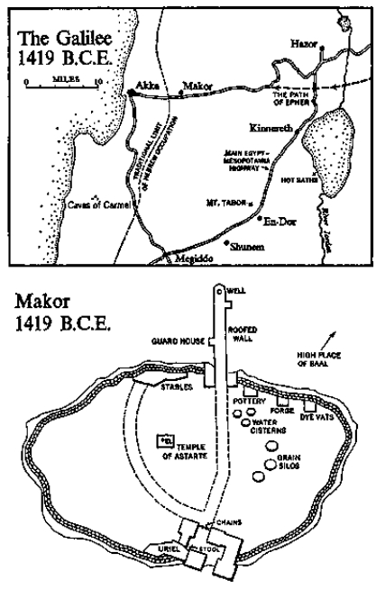

Clay pots
Two clay pots thrown on a potter’s wheel and fired at 880° centigrade at Makor, 1427 B.C.E. Bodies light red in color. Left pot decorated on inside with dark red and yellow stripes in slip. Right pot on outside with slip in same colors. All colors darkened by absorption of ash laid down during a conflagration in midsummer, 1419 B.C.E.
The sun-swept desert was as silent as the heavens on a night when there are no falling stars. The only sound was a soft rustle on the sand as a serpent, reacting to some unspecified fear, left the sun to seek the protection of a tall rock. A few goats grazed silently among the scattered boulders, finding shreds of grass where none seemed to exist, and two gray dogs from the encampment moved silently to keep the goats from roaming far. Like the snake, they were apprehensive and kept looking not at the goats but at some mysterious thing that moved they knew not where.
Then came a rustling sound from a bush—a tumbleweed kind of bush, half as big as a man, which ran and twisted across the desert when it dried—and the two dogs looked sharply, as if a hyena had come creeping in to snatch a goat, but still they did not bark, for they knew that the trembling in the bush was caused by no animal.
A light began to glow in the branches but no smoke came, nor flame either, and the bush shook as if it were determined to tear itself loose now, this hot afternoon, and go tumbling across the desert, even though no wind was blowing. As both the light and the trembling increased, a voice came, speaking gently and with persuasion.
“Zadok?” All was silent. “Zadok?” The dogs leaned forward. “Zadok?”
From behind the rock to which the serpent had fled an old man appeared —bareheaded, lean and leathery from his more than sixty years in the sun. He had an untrimmed beard that reached his chest, and wore a coarse robe of knotted wool and heavy sandals; he carried a shepherd’s stave but did not lean upon it. Cautiously he moved out from the rock and like a reluctant child took his place before the burning bush.
“El-Shaddai, I am here.”
“Three times have I called you, Zadok,” the voice said.
“I was afraid. Have you come to punish me?”
“I should,” the voice said gently. “For you have disobeyed me.”
“I was afraid to leave the desert.”
“This time you must go.”
“To the west?”
“Yes. The fields are waiting.”
“How will I know where?”
“Tomorrow at dusk your son Epher and his brother Ibsha will return from spying out the land. They will show you.”
“Are we to occupy the land?”
“Fields that you did not cultivate shall be yours and olive presses that you did not build. The walls of the town shall open to receive you and the gods of the place you shall respect.”
“These things I will do.”
“But remember the curse that shall be upon you if you worship those other gods. Or fail to observe my instructions. I am El-Shaddai.”
“I shall remember, I and my sons, and the sons of my sons.”
The trembling of the bush ceased and the light began to fade, whereupon he prostrated himself and cried, “El-Shaddai, El-Shaddai! Forgive me for not having obeyed you.” And as the light retreated the voice said, “Sleep in the shade, Zadok. You are a tired old man.”
“Will I live to see the fields of promise?”
“You shall see them and you shall occupy them and on the eve of victory I shall speak with you for the last time.”
There was silence, and that day the hyena did not come.
As in all times, these were years when El-Shaddai had power to command and men had free will to accept or reject his commands as their consciences dictated; therefore Zadok carefully considered the fact that his god had ordered him to sleep but decided that he might better spend his time on tasks which he must complete if his clan was to cross enemy territory. Finding a place in the shade of the tall rock, he chipped away at the big end of a flint nodule, building a smoothed platform from which he could later knock off a series of sharp knife blades to be fitted into wooden hafts which some of his sons were carving, and as he huddled over his flint, like a young apprentice taking care not to ruin the nodule, he epitomized his history. For the past three thousand years copper tools had been known in these regions, and at least two thousand years ago smithies in the towns had discovered that if they mixed one part of tin to nine parts of copper they could produce bronze, which was harder than either of the original component metals used alone. With this bronze the townsmen were now making tools of subtle precision and weapons of power. In the towns, life had been revolutionized; but this old man still clung to his flints, making from them whatever tools and weapons his people required. He used flint not only because he could get it for nothing—whereas bronze tools cost dearly in hides—but also because he knew that ii? his god had intended his Hebrews to use bronze he would have put it in the world for them and not have asked them to mix metals, which was a suspicious occupation and an evidence of human arrogance.
To all problems the old man reacted in the same way: there was an ancient truth that had been proved by long years of usage and there was innovation which might lead men into unknown regions, and he was determined to keep his people secure in the old ways. He preferred the practical thing done in the practical manner. His people worked harder than most, so their flocks prospered. His women spent long hours making cloth, so his men dressed better than other nomads. He taught diligence in all things and reverence, too, so the families about him multiplied. And since his people were content to live within the protection of El-Shaddai, they were happy and creative.
For if the old man who led them was practical, sitting on his ankles and working his flint to that richly satisfying moment when he could begin tapping with his small stone hammer, flaking off one sharp knife blade after another—the reward for having done one’s preliminary work carefully—he was also a spiritual man whose tired eyes could see beyond the desert to those invisible summits of the imagination where cool air existed and where the one god, El-Shaddai, lived. In later generations people who spoke other languages would translate this old Semitic name, which actually meant he of the mountain, as God Almighty, for through devious changes El-Shaddai was destined to mature into that god whom much of the world would worship. But in these fateful days, when the little group of Hebrews camped waiting for the signal to march westward, El-Shaddai was the god of no one but themselves; they were not even certain that he had continued as the god of those other Hebrews who had moved on to distant areas like Egypt. But of one thing Zadok was sure. El-Shaddai personally determined the destiny of this group, for of all the peoples available to him in the teeming area between the Euphrates and the Nile, he had chosen these Hebrews as his predilected people, and they lived within his embrace, enjoying security that others did not know.
He was a most difficult god to understand. He was incorporeal, yet he spoke. He was invisible, yet he could move as a pillar of fire. He was all-powerful, yet he tolerated the lesser gods of the Canaanites. He controlled the lives of men, yet he encouraged them to exercise their own judgment. He was benevolent, yet he could command the extinction of an entire town—as he had done with the town of Timri when Zadok had been a child of seven. He lived in all places, yet he was peculiarly the god of this one group of Hebrews. He was a jealous god, yet he allowed non-Hebrews to worship whatever lesser gods they pleased.
As Zadok chipped away at his flint, he knew that the mountain in which El-Shaddai was supposed to live did not exist in any ordinary sense of the word, for it would be offensive to imagine so powerful a god as limited to one specific place, with a tent, a couch and a concubine; no sensible man would commit himself to a god so restricted. El-Shaddai was a deity of such all-pervasive power that he must not be tied down to one mountain, unless that mountain were like the god himself—distant and everywhere, above and below, not seen, not touched, never dying and never living, a one god towering over all others, who existed in a mountain of the imagination so vast that it encompassed the entire earth and the starry heavens beyond.
It was his possession of this god that had caused Zadok his recent fear, for the old man sensed that such a deity could never have been conceived by men who lived in a town, nor by settled farmers who occupied river valleys where growing seasons had to be protected by propitiating seen gods who lived in known places over which they exercised a limited jurisdiction. Such settled people required seen gods to whom they could return; they needed statues and temples. But nomads who lived at the mercy of the desert, who set forth on a journey from one water hole to the unseen next, taking with them as an act of faith ail they owned and everyone they loved, trusting blindly that the path had been ordained for them and that after many days of near-death they would find the appointed well where it was supposed to be … such nomads had to trust a god who saw the entire desert and the hills beyond. Reliance upon El-Shaddai, the unseen, the unknown, was a religion requiring the most exquisite faith, for at no point in their lives could these lonely travelers be sure; men often came to water holes that were dry. They could only trust that if they treated El-Shaddai with respect, if they attuned their whistling harps to his, he would bring them home safely through the bleak and empty spaces.
Looking up from his flints, Zadok turned his face toward the silent bush and said, as if reporting to a trusted advisor from his camp, “El-Shaddai, I am at last prepared to take my people to the west.” The bush said nothing.
For fifty-seven years, beginning as a child, Zadok son of Zebul had been speaking with El-Shaddai, and in accordance with instructions from the solitary god, had kept his clan in the desert while others had left for the south on adventures that would be long remembered. Centuries earlier the patriarch of all, Abraham, and his son Isaac had moved down into Egypt, where now their descendants languished, in slavery. The clan of Lot had settled the country of Moab, while the sons of Esau had conquered Edom. Lately the clan of Naphtali had swung off to occupy the hill country of the west, but Zadok had kept his group in the northern desert, listening for the clear word of El-Shaddai that would take him out of the lonely desert and into the land of promise.
The desert in which the Hebrews had lived for so many generations consisted of three parts. There were sandy wastes where nothing grew, and these the nomads avoided, for no man dependent upon donkeys could traverse them; in later years, when camels had been tamed, it would be possible to travel these wastes, but not now. There were also vast expanses of rock and arid land with occasional oases of reliable water, and here men with donkeys could just barely live; “the wilderness,” this desert was called. And, finally, there were long stretches of semi-arid land lying next to settled farms, with not enough water for the regular planting of wheat or olive trees but enough to nourish sheep and goats, and it was in these lands that Zadok and his clan had been living for the past forty years. The wiser Hebrews felt certain that sooner or later El-Shaddai would command them to move on, but what they did not know was that three times the god had ordered Zadok to do just this, but the patriarch had been afraid and had temporized.
El-Shaddai, having at last become impatient, had delivered his latest command not to old Zadok but to the red-headed Epher. As a result of this message Epher had come to Zadok some weeks ago, saying, “Father, we ought to move into the good lands of the west.”
“El-Shaddai will instruct us when to move.”
“But he did instruct us. Last night. He came to me and said, ‘Go to the west and spy out the land.’”
Zadok had taken Epher by the shoulders and had asked directly, “Did El-Shaddai himself speak to you?” And Epher, a hot-headed young man of twenty-two, had insisted that the god had come to him. “What kind of voice did he use?” Zadok had probed, but his son could not explain, and that night Epher and Ibsha had run off to spy out the west. During their absence Zadok had worried as to whether Epher had spoken the truth. Why would El-Shaddai deliver a message of such importance to a youth? It seemed most unlikely, but now the god had indirectly confirmed Epher’s story, saying that tomorrow the young men would return with instructions for the move west; and when Zadok reflected on the matter he had to admit that it was not so strange if El-Shaddai had spoken to Epher directly, for Zadok himself had been only seven when the mysterious god had first spoken to him, saying, “In the rocks on which your father Zebul sits, there lurks a serpent.” He had stood transfixed, for the voice came from nowhere and he could not believe it. “Go,” the voice continued, “and warn your father, lest he be bitten by that serpent.” And he had run to the rocks and caused his father to leave just as the snake unwound itself from an inner crevice. From that day he was a child apart.
His name, Zadok, meant righteous, and he had continued to serve as the agency whereby El-Shaddai kept his chosen people informed. They were never many, the Hebrews of the desert. When Lot and Esau journeyed south they took with them less than a thousand people each. The clan of Zadok, as it waited for its culminating drive to the west, contained only seven hundred persons, for the great Hebrew tribes had not yet been formed. Zadok’s group of nomads could not be called a family, because it comprised much more than a single unit; for example, Zadok’s four wives and thirty children, many of whom had families of their own, did not add up to even a quarter of the total. But all in the group were related in some way to the old man, so although they were not a family they were a clan, and in the centuries ahead when several of these clans coalesced, the tribes known to history would emerge.
The clan of Zadok was one of the better-organized units, thanks principally to the righteous character of the man who led it. In all things he relied upon El-Shaddai. In war he was not overzealous, for he loved peace and sought it whenever possible—even at the displeasure of his sons, who were willing fighters. In trading he was honest and in charity generous. Among his wives he kept peace and among his children gentleness. He loved animals and initiated the practice of never slaughtering one member of a family in the presence of others, of never killing a kid and a dam on the same day, lest the creatures be offended by injustice as well as by death. In his clan women who had borne children could not work until five months had passed, except for kitchen duties that were not onerous. Yet he was a stern judge who had sentenced numerous persons to death, because infractions of divine law, such as adultery, filial insubordination, any profanation of El-Shaddai, were punishable by death. But when sentence was passed, with the old man warning that no appeal was possible, he usually allowed the victim a chance to escape, and it was understood that any condemned man might take with him one donkey and three water bags. But return to the clan of Zadok was forbidden.
The most intimate details of life were regulated by the old man. It was he who instituted the rule that unmarried men might not tend sheep alone: “lest it lead to an abomination.” Two young unmarried men were not to occupy a booth alone when they hired themselves out to settled farmers at the harvest: “lest there be an abomination.” Nor could men dress as women or women as men: “lest it lead to an abomination.” From centuries of experience in the desert the Hebrews had built up a body of sensible law which Zadok had memorized and which he transmitted to his older sons, who would serve as judges when he was gone: “A man may not marry two sisters, lest there be an abomination, nor may he marry a mother and daughter, lest it lead to an abomination.” And because it was essential that the great life of the family and of the clan continue uninterrupted, he enforced the ancient law that if a husband died before his wife had children, it was obligatory for one of the dead man’s brothers to take the widow immediately and get her with child so that the life of the clan could go forward with children to replenish it. If the surviving brothers were already married, no matter; if they despised their sister-in-law, no matter; so long as she had no children it was their responsibility to lie with her until she conceived—in the name of her dead husband, that his name might continue.
If Zadok was insistent upon carefully organized sexual behavior, this did not mean that he was contemptuous of this function of life: two years ago, at sixty-two, with his children grown and his wives occupied with many matters, he had looked one day upon a group of slaves which his sons had captured in a minor skirmish with a settled village and had seen one girl of sixteen who was particularly appealing. Claiming her for himself, he had found much joy in having her in his tent in the long nights. She was a Canaanite who worshiped Baal the omnipotent, but as Zadok lay with her, feeling her warmth against his tired body, he spoke with her against the Canaanite god and convinced himself that he was winning her away from Baal and to an acceptance of the true god.
His principal joy, however, was his thirty children. His oldest offspring were now the secondary heads of the clan, men and women with children of their own and several with grandchildren, so that Zadok could boast, “A hunter is happy when he has a quiver full of arrows to shoot into the future.” But it was his younger children—the offspring of his fourth wife—who interested him most: Epher the daring one, who had organized the scouting expedition to the west and who was always eager to engage an enemy; Ibsha, younger and quieter, but perhaps more seriously dedicated to understanding the world; and above all Leah, a girl of seventeen, not yet married but studying with alert eyes the various men her father suggested as possible husbands. If a man had produced only these three children he could feel proud, and to have them arrive in his later days was a serene pleasure.
For many years it had been Zadok’s custom to spend his late afternoons sitting with Leah and any other children who cared to join him, recalling the traditions of the Hebrews. Recently the young slave girl had begun to appear each day, sitting at the right hand of her master and listening with delight as he told of his ancestor Noah, who had escaped the great flood, or of Nimrod the hunter, whose exploits were renowned, or of Jubal, who invented the harp. For hours he would speak of these men, telling this story and that, but each day he came to some episode in the life of Abraham, who had been the first to travel in this desert—“He passed by these very rocks on which we sit this day”—and it was his pleasure to expatiate on the matter of Abraham and his son Isaac, contending that on the day that El-Shaddai outlawed human sacrifice he proved himself to be a god of mercy, a god so superior to all others that comparison was meaningless. “There are other gods, of course, and Baal is not one to laugh at,” he said approvingly to the slave girl, “and in the lands my fathers passed through, it was always our custom to respect the gods we met. El-Shaddai demands this of us, but there can be no question as to which god is superior, reigning above all others.”
On this last afternoon during which Zadok awaited the return of his sons from their scouting trip, he did not appear for his restful conversation with the children, so Leah and the slave girl went about their tasks, and from her tent the latter could see the old man standing apart from the camp, looking at it critically, like a judge. At last we are ready, he said to himself. Our cattle were never more numerous and our donkeys are fat. We have nearly two hundred warriors and our tents are mended. We are like a mighty bow drawn taut, ready to shoot arrows westward with force, and if it is the will of El-Shaddai that we move, he has brought us to superb condition. Approving what he saw of the equipment, the old man next studied his clan. It was well organized, faithful to one unifying god, disciplined, vigorous. It was as cohesive a unit as could then have been found in the desert regions—less educated, perhaps, since no member was able to read or write or cast bronze—but unified as no other similar group could be, for it had been Zadok’s stern command that no strangers be allowed to enter his clan without a period of indoctrination so rigorous as to repel most applicants. A Canaanite man could live beside the Hebrews for years without their trying to convert him away from his belief in Baal, but once he asked permission to marry one of the Hebrew women—and they were beautiful women who attracted men—he had to present himself to Zadok, forswear his former gods, undergo circumcision if that rite had not already been performed, abandon his former associates, and then spend eleven days with Zadok, trying to penetrate the mystery of El-Shaddai. Afterward, allegiance to any other god meant death, and few men were willing to submit themselves to such treatment merely to wed a Hebrew girl, no matter how attractive, so where men were concerned Zadok had kept his clan homogeneous.
The Hebrews insisted upon the circumcision of their men for a logical reason: it not only formed a covenant between the man and El-Shaddai, an unbreakable allegiance whose mark remained forever, but it also had the practical value of indicating without question or quibble the fact that the man so marked was a Hebrew. In war against the uncircumcised the coward might want to run away and later on deny that he had been a Hebrew. His captors had only to inspect him to prove he was a liar, so the circumcised man had better fight to the death because for him there was no masking his identity. The Hebrews were therefore strong warriors who were sometimes defeated but rarely demoralized, and for much of this cohesive spirit the desert rite of circumcision was responsible.
With women the problems were different. In their constant wars with settled tribes Zadok’s men often took prisoners and they were apt to be enticing creatures. Not even Zadok could keep his sons from lying with the strangers, and he was smart enough to realize his impotence in this matter. But he did insist upon precautions. When a slave girl was captured she was put into sackcloth of the meanest sort, her head was shaved and she was allowed nothing with which to clean or cut her fingernails, no oil for her face and little water for washing. After one month of such treatment she was led forth to stand beside the man who had captured her, while Zadok asked, “Do you still want this woman?” If the man said yes, she was tested as to her willingness to accept El-Shaddai; she was not required to surrender her old gods completely, for she was a woman, but she must acknowledge that El-Shaddai was superior, and if she did this she was delivered by Zadok to her captor, with the admonition, “Have many children.” With his own slave girl Zadok had followed this regimen and was gratified to see that she was becoming a true child of El-Shaddai.
Next day, as El-Shaddai had said, the young men Epher and Ibsha returned from the west with exhilarating news. “It’s a land of oil and honey,” Ibsha reported.
“It’s a land with armies,” his red-headed brother added, “but not too great to conquer.”
“It’s a land with fields covered with grass,” Ibsha continued.
“It has cities surrounded by walls,” Epher reported, “but they can be scaled.”
“It’s a land with more trees than I have ever seen before,” Ibsha said. “Mountains and valleys to delight the eye.”
“It has roads that we can march along,” Epher told those around him, “and rocks behind which we can take cover.”
“It’s a land which I cannot describe to satisfaction,” Ibsha said. “Where that bush grows over there, a dozen olive trees are standing. When you shake the limbs the fruit comes down like dark rain.”
“They have metal spears,” Epher went on, “and we have stone.” He showed his brothers some metal weapons he had acquired along the way.
Then Zadok spoke to the clan, on the last evening that they would reside in the desert. “El-Shaddai has spoken. We are to occupy the land. The olive trees are to be ours and the walls of the city will open for us.”
The Hebrews began to cheer but Zadok silenced them, for he comprehended the gravity of the step they were about to take, and as dusk fell upon their tents he commanded them to gather, a lean and sinewy group dressed in skins and woven cloth and leather sandals. They formed an intense congregation, kneeling while Zadok prayed: “Mighty El-Shaddai, whom no man has seen face-to-face, into your hands we deliver ourselves. It is your desire that we leave our ancient home for the valleys and the towns. Protect us, protect us from the dangers we cannot foresee.” With their faces upraised, the Hebrews praised their god, each man and woman committing himself to the deity that brooded over the desert, and finally they separated and by the light of flickering rushes packed their tents.
As they worked, Zadok the Righteous went alone into the womb of the desert, for only he appreciated what a terrible thing his children were attempting, this leap from the ancient ways into the modern. He had never been inside a town—not in sixty-four years of life; he had helped besiege several and had sent his sons trading inside their walls, and of course his little slave girl had lived in a Canaanite town to the north, which she delighted in describing as they lay together. But he himself did not fully understand what a town was, except that it was a place so crowded that El-Shaddai seemed not to frequent its narrow alleys. Other gods flourished in towns, but not El-Shaddai. Yet it was apparent to the old man that the moment had come in the life of his people when it was appropriate for them to try the town, uncertain and ominous though it was. El-Shaddai himself had ordained the move, and the eyes of his older sons had glittered with expectation as they listened to Epher and Ibsha describing the towns they had seen; but he looked back to the desert.
How far the horizons were this starry night, how sweeping the rocks as they fell sculptured by the hand of El-Shaddai. How sweet the waters were when they were found, how cruel the scorpions in the midday sun. It was the desert that tested a man, that issued the dreadful challenge, “Come upon me and see if you have courage.” It was this desert of illimitable magnitude that encouraged a man to consider the ultimate questions: not the matter of food tomorrow, nor the child to be born next week, nor the battle in the offing, but the questions beyond that and then far, far beyond that, too. Why, in the infinity of the desert, does this small speck called man have the confidence to move from this unknown point to that, finding his water and his food as he goes along? What divine assistance guides him and how is that assistance governed? Above all, how can man ascertain the divine will and then live in harmony with it?
The old man walked across the sand until he could look back and see his entire encampment, all the flickering lights and the shepherds guarding their flocks, and he remembered that night so very long ago when his people had been lost far east of Damascus in the worst desert they had ever traveled, and all were at the point where they must perish, but his father, Zebul, had said, “In the cool of the night we must push on.” The stricken Hebrews had protested, “We can go no farther,” but he had struck the tents and they had moved on till the next dawn, finding nothing. Through that day they had rested, parched and dying, and at night Zebul again said, “In the cool of the night we must march on,” and again they had protested that they were perishing, but they marched and they did this for three nights—wholly incapable of moving another step yet moving nevertheless—and on that last night when they refused to march, saying that they were finished, he went through the tents lashing out at them and shouting in rage, “Do you think, men of faltering faith, that El-Shaddai has brought us to this spot to perish without purpose? Does he not have an enemy waiting at the well to kill us in battle? Or a king to carry us off in slavery? Have we come so far to die inconsequentially? Up! Up! Let us see what terrible thing El-Shaddai has waiting for us.” And he drove his Hebrews, dying as they had threatened, but dying on the way to the well, not in some surrendered heap. And as the last sun rose—the one that none could have survived—Zebul found the well, and there they rested for three years.
Tonight Zadok did not intend to pray. No further communication between him and El-Shaddai was needed, but he did look with an aching hunger at the desert which he had known for all but seven years of his life, and he wondered if he would ever again find the peace, the consolation he had known amidst its sweep and challenge. He sensed that henceforth his vision would be diminished and his nearness to the stars removed. A way of life was being lost beyond the point of recovery and he was apprehensive about the future, but he felt certain that wherever his Hebrews went they would carry with them memorials of these desert years when they had lived close to their god.
Now he turned from his study of the tents, as if he wished to stand where none of his people could see him, and when he was hidden he wept, for he alone was conscious of the sin he had committed. “Almighty one, forgive me,” he said, and he spoke to El-Shaddai as if he were a little boy communicating with his father at the end of a day of naughtiness. “Six years ago, when the last of the clans moved south, you came to me in the desert and said, ‘Zadok, it is time for you to leave the desert and occupy the walled town.’ But I was afraid of battle. I was afraid of the town. I wanted to hold on to the security of the desert, and here I procrastinated, offering you this excuse and that. My sons came to me, asking that we move our flocks into the green valleys, but them too I ignored, and for the past six years I have stood against god and man, afraid to move. You were patient with me, El-Shaddai, but last month you spoke to Epher and sent him exploring by himself. Now he has returned with your commands and we shall move, as you ordered me to do six years ago.” He humbled himself in the dust and prayed, “El-Shaddai, forgive me. I was afraid.”
There was a rustling sound across the sand, as if a fox were running, and the voice of El-Shaddai said to Zadok the Righteous, “As long as you live, old man, you will be free to ignore my commands. But in time I will grow impatient and will speak to others, as I have spoken to Epher.”
“My home is the desert,” Zadok said in self-justification, “and I was afraid to leave.”
“I waited,” El-Shaddai said, “because I knew that if you did not love your home in the desert you would not love me either. I am glad that you are now ready.”
“El-Shaddai!” the patriarch cried in anguish, laying bare the real fear that had held him immobilized. “In the town will we know you as we have known you in the desert?”
“Inside the walls it will not be easy for me to speak with you,” the deity answered, “but I shall be there.”
With this eternal promise to his Hebrews, El-Shaddai departed, and when dawn came Zadok was at last prepared to order the small red tent to be dismantled.
In those centuries when the Hebrews dwelt in the desert, each clan maintained a sacred tent constructed of three layers of skin: upon a wooden frame so small that two men could not have crawled inside, goatskins were stretched and upon them were laid skins of rams dyed red with expensive colors brought from Damascus, and over the whole were thrown strips of soft badger fur, so that the tent was clearly a thing apart. Whenever Zadok indicated that his clan was to halt in a given place, the small red tent was erected first, signifying that this was their home, and on days like this, when the Hebrews were permanently abandoning an area, the last tent to be struck was always the red one, and it came down as the elders stood in prayer.
“We have lived in the desert as you commanded,” Zadok prayed, “and if we are now to occupy green fields, it is because you wish it so.”
When the tent was dismantled only a carefully chosen few were allowed to see what it contained. Zadok’s tabernacle held a curiously shaped piece of wood with which Zebul had killed a coward who had tried to convince the Hebrews to die in the desert rather than attempt the three-day march to the oasis east of Damascus. There was a string of beads whose history no one knew and a ram’s horn which had been used nearly a thousand years ago to usher in a memorable new year. There was a piece of cloth from Persia, and that was all. Most particularly El-Shaddai was not in the tent, nor was there anything representing El-Shaddai. He lived elsewhere, on the mountain that did not exist.
“Our god is not in these shreds of leather,” Zadok reminded his Hebrews. “He does not live in this tabernacle. He is not a god held prisoner in our tents, but we are held prisoner in his.” As the assistants packed the tabernacle prior to the march inland, the old man added a fifth item which would henceforth ride with the clan of Zadok wherever it went, in memory of the beneficence El-Shaddai had showered upon them in the desert. From the arid waste he picked a rock of no significant shape; it was just a rock from the desert which they would see no more but which they would remember whenever they saw the stone of Zadok.
At the head of the seven hundred Hebrews as they started forth walked a little donkey bearing the red tent, and behind the beast came old Zadok, sandals on his feet, coarse woolen breeches tied at his waist, a light woolen robe slung over his shoulders, and a long staff in his left hand to steady himself on the rocky path. Sometimes his beard flowed back over his left shoulder and his age-dimmed eyes were squinted as he tried to pick out the way ahead, but in this task his sons helped him. At his side walked the young slave girl bearing a waterskin, and behind him came his wives, his eighteen sons, his dozen daughters, their husbands and wives, their cousins, grandchildren, uncles and all who had attached themselves to this sprawling unit. The goats, the sheep, the few cattle and the dogs came along, but mostly the donkeys did the work, for on their backs rode the tents, the food and the babies. At a rise atop the first hill many of the Hebrews stopped to look back with longing at the great desert which had held them safely for so many generations; but Zadok did not. He had said his farewell in his heart, where the anxiety of this day would live forever.
Decisions on the westward trip were made by Epher, the red-headed youth who had often waged war against walled towns, and on the nineteenth day this stocky warrior brought his clan and its wandering flocks to the crest of a hill—in later years it would be remembered as a mountain—from which the Hebrews looked down for the first time into the land of Canaan, lying to the west of a beautiful river called even then the Jordan, and it was seen to be a land of extraordinary richness. Never before had the people of Zadok seen so many trees.
“We shall cross the river there,” Epher explained. “To the right lies a small lake and to the left a large sea shaped like a harp and called Kinnereth.”
“When we cross the river, which way do we turn?” his father asked.
“Neither right nor left. We march through those hills ahead and come at last to the road leading west.”
As the Hebrews gathered about their patriarch some argued that if the land flanking the river was so rich it would be folly to move past it in search of better, but Epher for once preached caution, warning his brothers, “Not far to the north lies Hazor, a mighty city, and we shall be fortunate if its army allows us to cross the river, much less occupy lands which they call their own.” The men who would have to do the fighting if the Canaanites attacked while they were fording the river looked with apprehension toward the unseen city, but old Zadok looked not at the potential enemy but at the centuries ahead, and El-Shaddai allowed him to foresee men like Joshua and Gideon, and he prophesied: “In some future day Hazor will be humbled and the sons of El-Shaddai will occupy all Canaan, as we now move forward to occupy our small portion.” And he gave thanks that this fair land was to be the heritage of the Hebrews. But it was young Epher who led the clan noiselessly to the banks of the Jordan, where the families crossed the river without being detected and headed westward, eluding the armies of Hazor.
As the Hebrews skirted the hills that lay between the Jordan and Akka they were free to inspect at first hand the rich valleys of Canaan and were fascinated by the numerous rivers that carried water to vineyards, the slopes where more grass grew than sheep could eat, the olive trees, the fruit orchards, the bees humming by laden with pollen, and the flight of innumerable pigeons waiting to be trapped. As the desert had reached to the horizon in barrenness, so these valleys reached to the hills in fruitfulness, and the Hebrews resolved that if they must fight for this inviting land they were ready to do so. As they drew close to Makor, Epher began forming his people into a more compact unit; the donkey with the red tent continued in front but cattle were moved near the center of the slowly moving mass and children were stopped from ranging too far from their mothers. A sense of excitement pervaded the clan, for all sensed that the moment of trial was at hand. Finally, as the time approached when day and night were of equal length, the first day of spring when the new year began, Epher and Ibsha moved ahead to scout the exact location of the target town, and in the afternoon they ran back to advise their father that early next morning he would reach the town called Makor. That night the timorous old man pitched his camp some miles east of the town and assembled his sons and the leaders of the subsidiary families.
“We have been marching toward a battle,” he told them, “and tomorrow we shall see the walls you want to assail. But there shall be no battle.” His sons murmured among themselves. “We shall exist in peace among the Canaanites,” Zadok continued, “they with their fields and we with ours, they with their gods and we with ours.”
The more daring men of the clan opposed this idea, but Zadok was firm. “El-Shaddai has promised us this land, and it will be ours. But not through bloodshed.”
The idea of a negotiated occupancy disappointed the Hebrews. Was it for this that they had made their flint weapons? And traded with traveling smithies for bronze axe heads and arrow tips? They remonstrated with the patriarch and demanded that in the morning they march in battle array to the walls and assault them.
“The walls of Makor we shall overcome without the use of force,” he argued.
“You haven’t seen them,” his younger sons protested.
“But El-Shaddai has seen them,” he insisted, “and to him all walls are alike. They are captured only when he gives the command.” He warned his sons and the other eager warriors that it was the will of their god that occupation of the fields be peaceful, and his sons said, “Ask him again what we must do,” for they could not visualize obtaining fields without bloodshed; but they trusted their father as a man who spoke directly to his god, and when he walked alone down the Damascus road, coming at last to a valley of red rock, they did not try to follow him, for they knew that the old man was with his god.
“What are we to do?” the indecisive patriarch asked the face of the rock.
“As I explained in the desert,” came the patient voice, “you are to occupy the land apportioned to you.”
“But in the desert you did not tell me whether I should bring war or peace. My impatient sons are eager for war and the death of many people.”
“Are you still afraid of war, Zadok?”
“Yes. When I was a boy and we were besieging Timri…”
“I remember Timri.”
“You ordered my father Zebul to destroy the town for its abominations, and he forced me to stand beside him as he slaughtered men and women and children. And my ankles were red with blood. And I got sick and wanted never to see a spear again. And I hated you, El-Shaddai, for you were cruel.”
“I remember that night,” the god said. “You were seven years old, and you cursed me, and was it not then that I spoke to you for the first time? On the morrow of Timri when your father was sleeping near the serpent that would have bitten him?”
Zadok recalled that remote midday, fifty-seven years ago, when he had first spoken with his god, and not once in the intervening years had it occurred to him that El-Shaddai had chosen him that day precisely because of his opposition the night before to the massacre of Timri. El-Shaddai could have elected older men and wiser as his voice, but he had chosen the child Zadok because even as a boy of seven he had been willing to judge the questions of mercy and humanity with his own conscience.
“I have not spoken to you of war or peace,” the deity continued, “because these are matters which I alone determine. To you they are of no concern. Occupy the lands, and whether there shall be war or peace I will decide—according to how the children of Canaan receive me.”
“Then I must approach the town without knowing?”
“You man of little faith! Did you not live in the desert on those terms? Who can be certain that when he approaches a town the walls will open to his command? Yet I have promised you that the walls of Makor shall do so, and you ask—in war or in peace? Remember your grandmother Rachel, who went to the well of Zaber eight hundred days without event and on the next day she went and was killed by a scorpion. Could she have prevented this by taking precaution? Remember your son Zattu, who passed through the pit where a hundred men had died of serpent stings, and he came out alive. Could he have arranged this by taking thought? I am El-Shaddai, and I have promised you that the walls of Makor shall open to your command. Can you, by taking thought, increase that promise?”
The old man humbled himself before his god, but when he returned to his sons he interpreted El-Shaddai’s words to his own liking: “Tomorrow there shall be no war.” The Hebrews, content that this was the will of their god, slept that night without fires and in the morning girded themselves for the final march to the walled town.

On one unhappy day three different groups of tourists came demanding to see the Candlestick of Death, and after Cullinane had explained three times that it was on display in Chicago he felt depressed. He locked his office door and sat inside brooding about the problems of the dig. It happens every time, he reflected. You start what looks like a simple dig. Historical fragments hiding in earth. And before you’ve filled the first basket you find yourself digging into your own understanding of the civilization involved. He leaned back and recalled his days in Arizona. He had begun that excavation knowing as much as most experts about the American Indian, but had ended by spending two years of concentrated research into their mental processes, reviewing everything written on the subject and venturing far afield for collateral suggestions from the Ainu in Japan or the Eskimo in Alaska. Now he spent his days digging physically into the earth of Makor and his nights probing the spirit of the Judaism that had been responsible for building so much of the tell.
When he was satisfied that the last tourists had gone, he unlocked his door and wandered into Eliav’s office. “Have you any new material that I could read about the Jews?”
“You catch me off guard,” Eliav replied.
“The nonsense I’ve been hearing today. I’m disgusted. I’d like to bite into something solid.”
“You’ve read De Vaux, Kaufmann, Albright?”
Cullinane nodded.
“Maimonides?”
“He’s the best.”
“There’s one better.”
“What?”
“Read Deuteronomy five times.”
“Are you kidding?”
“No. Deuteronomy. Five times.”
“What’s your thought?”
“It’s the great central book of the Jews and if you master it you’ll understand us.”
“But is it worth five readings?”
“Yes, because most Gentiles think of the ancient Hebrews as curious relics who reached Israel ten thousand years ago in some kind of archaic mystery.”
“How do you think it happened?” Cullinane asked.
“Deuteronomy is so real to me that I feel as if my immediate ancestors—say, my great-grandfather with desert dust still on his clothes—came down that valley with goats and donkeys and stumbled onto this spot.”
“Will reading Deuteronomy give me such a feeling?”
“Read it five times and see,” Eliav countered.
It was in this way that Cullinane renewed his acquaintance with the old Jewish masterpiece which he had first seriously studied at Princeton. Deuteronomy purports to be the farewell address of General Moses to his Jews as they are about to leave the wilderness and enter into the land of Canaan, and at the opening line, “These be the words which Moses spake unto all Israel on this side Jordan,” Cullinane had the feeling that Deuteronomy resembled General Washington’s farewell address to his colonial soldiers; and the analogy was apt.
At Makor there was no Douay Version of the Bible, so Cullinane could not use that Catholic translation; but this didn’t bother him. At Princeton he had become familiar with the Protestant King James Version of 1611, and now as his eyes ran down the columns they caught phrases and sentences which he had once vaguely supposed to be from the New Testament: “Man doth not live by bread only,” and “From the hewer of thy wood unto the drawer of thy water,” and “Thou shalt love the Lord thy God with all thine heart, and with all thy soul, and with all thy might.” He discovered concepts that lay at the core of his New Testament Catholicism: “But the word is very nigh unto thee, in thy mouth, and in thy heart, that thou mayest do it.” And he came upon other phrases that jolted him regarding the story of Jesus; these made him go back for a second reading: “If there arise among you a prophet, or a dreamer of dreams, and giveth thee a sign or a wonder… thou shalt not hearken unto the words of that prophet, or that dreamer of dreams: for the Lord your God proveth you, to know whether ye love the Lord your God with all your heart and with all your soul.”
When Cullinane finished his first reading he was inclined to tell Eliav that he was now refreshed and could face the next busload of tourists, but he had found the tall Jew to be canny in these matters, and so, to indulge him, he began again at the beginning of Deuteronomy. This time he gained a sense of the enormous historicity of the book: the unknown author, who had used the literary device of speaking as Moses, had been a scholar immersed in Jewish history and spoke of it as if it had happened yesterday—as Eliav had said, in the life of his great-grandfather—and this involvement began to communicate itself to Cullinane. He now read the Ten Commandments as if he were among the tribes listening to Moses. It was he who was coming out of Egypt, dying of thirst in the Sinai, retreating in petulant fear from the first invasion of the Promised Land, He put the Bible down with a distinct sense of having read the history of a real people… not the real history, perhaps, but a distillation of hundreds of old traditions and national memories. Eliav had guessed right: Cullinane was beginning to feel that a band of living Hebrews had one day come down these gullies to find Makor. He wondered what new thing he would uncover on the remaining three readings.
At this point Eliav appeared with a book under his arm and took away the King James Version. “John, I wish you’d do your next two readings from this new English translation done by a group of Jewish scholars in Philadelphia.”
“Why Jewish?”
Eliav hesitated, then said, “It’s a ticklish point. But Deuteronomy is particularly Jewish in nature. It’s our holy book and it means double to us what it could possibly mean to a Catholic or a Baptist. Yet everybody reads it in Protestant or Catholic translations…”
“To me a translation’s a translation,” Cullinane protested.
“Not so,” Eliav retorted. “Even when the King James Version was made, it was purposefully old-fashioned. Something beautiful and poetic. Today it’s positively archaic, and for young people to study their religion from it can only mean they’ll think of that religion as archaic—clothed in dust and not to be taken as contemporary.”
“Perhaps, but why a Jewish translation?”
“The other thing that’s wrong with the King James Version is that it’s purely Protestant in its choice of words. You Catholics discovered that early, so you held to your Douay Version, which was just as lopsided on the Catholic side. And all the time, the book you’re wrestling over is a Jewish book, written by Jews for the instruction of Jews in a very Jewish religion. We can be forgiven if we feel that we ought to have a translation which takes these things into account… especially with Deuteronomy.”
“So now you’ve slanted everything into a Jewish bias.”
“We didn’t, but that’s not the point. Do you know Isaiah 7:14?” Cullinane was always impressed with the way Jews could cite the Bible, and now Eliav repeated the Old Testament words that lay at the heart of New Testament Christianity: “Therefore the Lord himself shall give you a sign; Behold, a virgin shall conceive, and bear a son, and shall call his name Immanuel.”
Cullinane consulted his Protestant Bible and satisfied himself that Eliav had quoted accurately. But then the Jew said, “Now look it up in the Jewish translation,” and there Cullinane found the word virgin translated as young woman.
“On what authority did they make that change?” he asked in some surprise.
“Look at the original Hebrew,” Eliav suggested, handing him a third version, and in the original language of the Bible the word virgin was not mentioned. It had been introduced by Christian scholars as a device for proving that the Old Testament prophesied the New and that the New should therefore supersede the Old. “Throughout the centuries,” Eliav explained, “hundreds of thousands of Jews were burned to death or massacred because their own Bible was misused against them. I think we’re entitled to an accurate Jewish version.”
When Eliav left, Cullinane began what was to be a startling experience. The new Jewish translation, by divesting Deuteronomy of its Shakespearean poetry, offered the reader a blunt and often awkward statement. The old and the new compared in this manner: Hear, O Israel, the statutes and judgments which I speak in your ears this day, that ye may learn them, and keep, and do them.
Hear, O Israel, the laws and norms that I proclaim to you this day! Study them and observe them faithfully!
He checked the modern translation against the original Hebrew and discovered the Jewish translation to be literal and the King James Version not. He tested half a dozen additional passages and satisfied himself that the Jewish translators had at least tried to render their version faithfully if not poetically.
But gradually his critical judgment receded and he found himself reading for the pure pleasure of contemporaneous expression; and on his second run he came upon that verse which has always had such a powerful hold upon the Jewish reader: “It was not with our fathers that the Lord made this covenant, but with us, the living, every one of us who is here today.” And the point Eliav had been trying to get across was burned into Cullinane’s consciousness: Deuteronomy was a living book and to the living Jew it had contemporary force. When he came to the scene in which the Jews, having received the Ten Commandments, urged Moses to go back to God for further instructions, the simple idiom of the new translation gave him the sensation of being actually with the Jews at Horeb as the commandments were being delivered: “You go closer and hear all that the Lord our God says; then you tell us everything that the Lord our God tells you, and we will willingly do it.”
When he was finished with his fourth reading he told Eliav, “I see what you mean. It has a sense of actuality. You can almost touch the Jews.”
“Now for the last one, this time in Hebrew. Just as it was written down.”
“My Hebrew’s too rusty,” Cullinane protested. “I’ll take your word that it’s a fair translation.”
“I want to prove quite a different point,” Eliav said. “And for it your Hebrew’s adequate. Skip the words you don’t know.”
It took Cullinane about a day to make his way through the Hebrew text, and it was one of the best days he was to spend at Makor, for as he dug his way into the powerful Hebrew, in almost the same way as he had to dig through the soil hiding Makor, he came upon that quiet yet singing declaration of faith that is the core of Judaism, the passage which expresses the essence of Jewish history: “My father was a fugitive Aramaean. He went down to Egypt with meager numbers and sojourned there; but there he became a great and very populous nation. The Egyptians dealt harshly with us and oppressed us: they imposed heavy labor upon us. We cried to the Lord, the God of our fathers, and the Lord heard our plea and saw our plight, our misery, and our oppression. The Lord freed us from Egypt by a mighty hand, by an outstretched arm and awesome power, and by signs and portents. He brought us to this place and gave us this land, a land flowing with milk and honey.”
At dinner Eliav said, “The point I wanted to make is this. The Hebrew used in writing Deuteronomy sometime in the seventh century B.C.E. is the same Hebrew that we’ve revived in Israel after it had been a dead language for a thousand years. Call over one of the kibbutzniks. Son!” A youth of fifteen ambled over, sloppy, happy, his sleeves rolled up for the job of cleaning the dining hall. Eliav asked, “Can you find me someone who speaks English,” and the boy said that he did, so Eliav handed him the Hebrew Torah, pointed to a passage in Deuteronomy and asked, “Can you read this?”
“Sure.”
“Go ahead.” The boy studied the words, some of the oldest written in Hebrew, and said tentatively, “‘My father was an Aramaean with no home. He went to Egypt. Not many. There he became a nation.’”
“Good,” Eliav said, and the pleased kibbutznik returned to his work.
Cullinane was impressed. “You mean… any educated Israeli today can read the Bible exactly as it was written?”
“Of course. For us this is a living book. Not necessarily a religious book, you understand. That boy, for example. Son!” The youth came back, smiling. “You ever go to synagogue?”
“No!”
“Your parents religious?”
“No!”
“But you know the Torah? The Prophets?”
“Sure,” and he left.
“That’s what you must remember, Cullinane. Every Jew you see on this dig can read the original Bible better than you can read Chaucer.”
“You’ve proved your point,” the Irishman admitted.
“I haven’t got to the point yet,” Eliav corrected. “We Jews persisted in history… where are the Babylonians, the Edomites, the Moabites with their multitudes of gods? They’re all gone, but our tenacious little group of Jews lives on. And we do so because what you’ve been reading in Deuteronomy is to us a real thing. One crucial passage you must have noticed. It has an historic actuality, whether you Gentiles and we Jews like it or not.”
“Which one?”
Without consulting the Torah, Eliav quoted, “‘For you are a people consecrated to the Lord your God: of all the peoples on earth the Lord your God chose you to be His treasured people.’”
“I wish I could believe it,” Cullinane said.
“He does,” Eliav said, pointing to the kibbutznik, “and the fascinating thing is that he believes it exactly as I do, in a non-racial sense. I suppose you’d call me a free thinker except that I believe in the spirit of Deuteronomy.”
This was too finely drawn for Cullinane, and he pushed aside the Hebrew Bible, but Eliav picked it up. “The key to the Jew,” he said jokingly, “is my favorite passage in the Torah. Moses is being eulogized as the greatest man who ever lived, knew God face-to-face and all that. But what is the very last thing said of him as a man… as a living man? It seems to me that this is a profound insight… It’s the reason why I love Deuteronomy. I’m going to quote it from the King James Version first: ‘And Moses was an hundred and twenty years old when he died: his eye was not dim, nor his natural force abated.’” Eliav repeated the last phrase, “‘nor his natural force abated.’ But in our Hebrew original this last eulogy on a great man ends, ‘His moisture was not fled.’” Eliav closed the book and placed his hands over it. “A man who had known God, who had created a nation, who had laid down the law that all of us still follow. And when he dies you say of him, ‘He could still function in bed.’ Ours is a very gutsy religion, Cullinane.”
* * * * *
In the town of Makor eight hundred years had passed since that memorable day when five of its citizens had been involved in tragedy, and because of poetic dirges composed at that time the men and women of the tragedy had been transformed into gods who had added spiritual richness to the religion of the area.
Joktan the Habiru was now remembered as a heavenly stranger arriving from the east with many donkeys to give protection to the murderer, and the legend left no uncertainty as to the welcome Makor had given him. He had been quickly absorbed into the town, primarily because he had been willing to recognize the gods of Makor as superior to his own. Welcome the stranger, Astarte, Welcome the one who comes from afar, Who comes to worship you on donkeys.
Later verses made it clear that Astarte had smiled upon him, making of him a principal citizen who had inherited the house of mirth once occupied by the man he aided.
Urbaal the farmer enjoyed a more spectacular transformation, for when the local poets reviewed his tragic history they saw a great man, the owner of fields and the father of many children, caught in the grip of passions he could not master, and it became obvious that he could not have been a man. He was the god Ur-Baal, sent to Makor for a divine purpose, and through the centuries the poets had shortened his name and made him the principal god of Makor, known simply as Baal the omnipotent.
Amalek the farmer suffered a curious fate, for although he had been in many ways the most decent actor in the tragedy, he was always remembered as the enemy whom Ur-Baal had to kill, and thus he was gradually changed into the villain Malek, and then into Melak, the god of war. When this was accomplished, what had happened on that new year’s day of 2201 B.C.E was made clear: Ur-Baal had slain Melak in order to protect Astarte, and only Ur-Baal’s courage, his willingness even to travel abroad among the donkeys, had saved Makor: Ride on the clouds, Ur-Baal, Ride on the clouds of storm. Behold, you shall ride the storm!
Libamah the enticing slave girl was now seen as a manifestation of the lovelier aspects of Astarte, and her capacity to inflame Ur-Baal had come to represent the creative processes of nature.
Timna the faithful wife also contributed to the concept of Astarte, and it was recalled that although she had loved Ur-Baal she had also been directly responsible for his death; but it was Timna’s willingness to follow her husband barefoot and pregnant into his exile that had provided Astarte with one of the most beautiful adventures in Canaanite mythology: The year closed and the rains came, Even to Makor came the rains, And Ur-Baal fled to the olive grove, Fled to the night, to the realm of Melak, Down to the realm of Melak, god of the night.
There Ur-Baal would have remained in banishment, depriving Makor of its spring growing season and causing it to perish of starvation, had not Astarte gone seeking him to lure him back to earth and his assigned functions: Pregnant she left the zigzag gate, Pregnant with children of tomorrow, Seeking tomorrow and her lover Ur-Baal.
She had found the greatest of the gods imprisoned at the altar of Melak, and in a terrible hand-to-hand fight she had slain Melak, chopping him into small pieces and scattering his fragmented body over the fields like seeds of grain. This had brought the wheat to germination and the olive trees to blossom, and each winter since then the voyage of Astarte to the nether world had been repeated.
So now Makor was governed by a benign trinity: El, the unseen father of the gods whose characteristics grew ever more vague as the centuries passed; Baal the omnipotent; and Astarte his wife, who was both forever virgin and forever pregnant as the mother of all. The trinity had one additional peculiarity: Astarte both loved and hated Baal, and it was this conflict that explained the world’s confusion, the contest between female and male, the warfare between night and day, between winter and summer, between death and life.
El, Baal, Astarte. In a tightly knit and beautiful partnership they watched over Makor, guiding it through the turbulence of that unsettled age. In the last eight hundred years Mesopotamia and Egypt had often contested the great valleys to the east; strange armies belonging to neither of those powers had also swept through Canaan, gutting and burning, but the little town on its slowly rising mound had managed to survive. It had been occupied by many victors and had been burned twice, but it had always recovered, thanks to the manifest interest taken in it by the trinity.
The town looked different. The mound had grown fifteen feet higher and now stood thirty-five feet above the surrounding plain. This meant that the original wall had long been submerged in rubble, but the wall itself still stood, locked in earth and providing the solid base from which subsequent walls had risen, as strong and as wide as before. Also, when the savage Hyksos had appeared out of the north to conquer the area, they had adopted Makor as a fortress city and had imported slaves to surface the slope with smooth stones, thus forming a glacis which protected the approaches to the wall. Makor was now practically unassailable.
Inside the walls other changes had occurred. The rising level of the town had quite obliterated the four monoliths, over whose heads rested a small temple consecrated to Astarte. No longer was there a Baal-of-the-Storm or of the water or of the sun; these attributes were now concentrated in Baal himself. The big temple was no more, for Baal resided on top of the mountain in the back of town, but there were homes for his priests, whose principal job was to guard the underground silos where grain was stored and the water cisterns where emergency supplies were kept in case of siege. Makor now contained more than one hundred and eighty houses and the greatest internal population it would know—nearly fourteen hundred persons. Another five hundred farmers lived outside the walls, which were broken by two large gates built of oak imported from Tyre. The first, preserving the original approach from the south, was much wider than before and was marked by four square towers, two abutting the outside wall and two inside. In the various times that Makor had fallen to enemy troops the main gate had yet to be forced.
It was the second gate, a postern in the north wall, that accounted for the most noticeable change. In several sieges of Makor the enemy had triumphed by capturing the well outside the wall and mounting siege until the internal cisterns were empty. Then, faced by thirst, the town had been forced to surrender, so in 1440 B.C.E. the town fathers, led by a strong-minded young man named Uriel, had decided to build a pair of stout walls leading out from the postern gate and surrounding the vital well. The walls were built and then roofed over, which had the effect of bringing the source of water inside the town, so that in time of siege the women of Makor could walk in darkness and safety from town to well and thus keep the cisterns full. As a result of this extension to the north, Makor now looked like a symbolic representation of the male reproductive organs; and perhaps for this reason the waterwall had proved its effectiveness during several would-be sieges from which the attackers had withdrawn after discovering that they could not capture the water supply.
The great Family of Ur was now represented by this builder Uriel, who had persuaded his elders to construct the waterwall. Incontestably he was the leading citizen of Makor, the man who owned the olive groves south of town and the oak forests to the east. He was forty-one years old, taller than the average Canaanite and more thoughtful. The priests of Baal looked to him for guidance; at first they had opposed the building of the waterwall, arguing that if Baal had intended his well to be protected he would have cared for the matter himself, but when Uriel’s strategy proved right they changed their criticism to support. There was now no king of Makor, the Hyksos invaders having exterminated the royal family, but Uriel served so many of the ancient functions that he enjoyed a quasi-kingship. In the official records kept in Egypt, which now ruled the area, he was known as governor, a role which he filled rather better than most of the Egyptian appointees in neighboring towns like Hazor, Megiddo and Akka.
Uriel wore a black beard, trimmed square below his chin, and he was unusual in that age in that he had but one wife, Rahab, by whom he had one child, his son Zibeon. Concubines were not important in his life; he had several, as befitted a man of his dignity, but their children he did not bother about and as he grew older he no longer found it necessary to surround himself with younger women. He loved his one wife and found her both a congenial companion and a wise counselor.
He was a man devoted to Makor. When younger he had served as general of the army in days when a force of four hundred well-armed men could be put into the field. Twice the Egyptians had chosen him to serve as their field commander of contingents requisitioned in the area, and he had roamed as far afield as Carchemish and Damascus, but always he returned happily to Makor. It was he who initiated the practice of having the governor live adjacent to the main gate so that any merchant entering or leaving town might find him easily to consult on matters involving taxation. His home was a large fortified building wedged into the western wall of the gate, with two entrances, one for his family leading into the town and the other an official door that led from his office directly into the zigzag passage. He was so concerned with the administration of Makor that he often perched himself on a three-legged stool inside the gate, chatting with anyone who passed and gossiping about the government of the town. Under Uriel’s leadership Makor had prospered. Outside the walls many farmers produced food surpluses that were sent by caravan to Akka, while inside the town other men operated a sophisticated economic system based upon the manufacture of pottery from clay found in the wadi, the weaving and dyeing of cloth, and the casting of bronze implements of a high quality: the copper required was brought north by donkey caravan from mines south of the Red Sea; the tin came to Akka by ship from ports in Asia Minor and the finished ware went out to many towns and cities. In Makor no one used flints.
The primary producers of pottery, cloth and bronze were supported by middlemen who provided funds for bringing raw materials in and who undertook the risk of shipping the goods out. They also supplied local shops, which sold not only things manufactured in the town but also objects imported from specialized centers as far away as Cyprus, Greece and Crete to the west, and Damascus and India to the east. The people of Makor ate well, dressed well, prayed to an organized trinity of gods who protected them efficiently, and enjoyed as secure a form of government as any known in the region between Mesopotamia and Egypt.
If on the one hand they had not yet discovered the concept of coinage, they did have a well-tested system of money-by-weight, whereby gold and silver could be sent long distances to pay bills; and if they did not have an organized system of posts they had messengers who moved regularly back and forth between the rivers. Uriel could write in three languages: the Akkadian cuneiform of Mesopotamia, which was the principal language for all diplomatic or business transactions; the hieroglyphs of Egypt for governmental reports; and the new form of writing used in northern Canaan, from which the alphabet would ultimately develop. On his desk he kept a set of scarabs carved in Egypt which he used to sign his clay tablets or to stamp the handles of jugs used to measure wine and grain. He had no books, but he did have collections of clay tablets on which important ideas were codified, and he knew by memory many rhymed legends from Mesopotamia and Canaan, especially the local epic dealing with Baal and Astarte in the nether world. He did not realize that this poem was a recapitulation of adventures in which his ancestors had been involved, and if someone had informed him of that fact he would have been embarrassed, for he was a man devoid of vanity or any desire to compete with the gods.
At forty-one Uriel was a judicious administrator who found personal pleasure when his fields produced more wheat or his olives a better press of oil. The only point on which he could be considered vain was his son Zibeon, twenty-one years old, dark-haired and handsome. For a while it had looked as if the young man might get into trouble by trying to force his attentions upon girls whose parents did not wish their daughters to marry at fourteen, even though peasant families permitted this; but as a result of pressure from Uriel, his son had taken a Hyksos mistress and that crisis had passed. In the meantime, the governor had been reviewing the families of his friends and it seemed probable that soon his son would marry.
On the spring day in 1419 B.C.E. when Zadok and his Hebrews were approaching Makor from the east, Governor Uriel perched on his three-legged stool, so situated that he could inspect anyone coming up the ramp and at the same time look into town to see what was occurring there. In the latter direction he could view a complex society consisting of Hyksos soldiers who had left the battlefield, Egyptian settlers, a few Africans, a handful of Hebrews who had straggled down from the north, and half a dozen other kinds of people from the sea and the desert. Even those who were properly called Canaanites were of a grandly confused background, but all lived together in a kind of tolerant amalgam. A short, swarthy young man with a sharply hooked nose detached himself from the crowd and walked toward Uriel.
“Would the governor care to inspect?” the young Hittite asked. His parents had reached Makor during a raid by mercenaries from the north.
“Are things prepared?” Uriel asked. The young man nodded, whereupon the governor directed a guard to take the stool back into the office while he joined the Hittite and walked along the broad main street that cut directly across the mound from the main gate to the postern. As he went he inspected the shops that lined the thoroughfare: the pottery shop that sold beautiful ware from the Greek islands; the cloth shop that had more than two dozen kinds of fabric; and the metal shop that had swords and daggers and jewelry highly burnished. As always, he checked the grain silos and the water cisterns to see that they were in good order, then proceeded to the area east of the postern gate where the potters threw clay upon their wheels and shaped the vessels that would be sold next month. Here kilns burned slowly, baking the better clay until it rang like glass, while at the bronze forge teams of young apprentices blew through long pipes bringing small furnaces to a blaze, or worked bellows to achieve the same effect in the larger furnaces.
Today, however, Governor Uriel was not inspecting his craftsmen. His guide led him to the section west of the Watergate to the point where the wall of Makor bulged northward, and there, in a series of low wooden buildings, the young Hittite showed Uriel the ultimate weapon on which the defense of Makor rested, a device so terrifying that it would probably make future sieges unprofitable.
“Is everything in order?” the governor asked.
“Yes,” the young man said, calling to attention a group of Hittites assigned to the low buildings.
“Are these men able to act quickly?”
“At your command,” the Hittite assured him.
Satisfied that the defenses of Makor were secure, Uriel returned to the postern gate, where he went some distance into the dark waterwall until he reached the first guardhouse, from which he looked ahead to the well where women were gathered. Then he returned to the town, where he walked back along the line of shops, nodding to his townsmen, until he came to the gate and there he called again for his three-legged stool. Before it could be brought, his son Zibeon ran up the ramp accompanied by a young farmer. They bore exciting news.
“An army is marching down the road.”
Instantly Governor Uriel thrust out his hands, one toward Akka, one toward Damascus, as if he were once more in command of troops. “From where?”
“There,” Zibeon indicated, and Uriel turned his whole attention to the east.
His first thought was of the cisterns, and he had just satisfied himself that they were filled. Grain was also plentiful and he had seen that the waterwall was in good repair. He next thought of the five hundred peasants who lived outside the walls, and his first inclination was to sound the bronze trumpets used to summon them to the town, but as he was about to give the order he visualized the rich fields awaiting their spring planting and the vines about to mature and he was reluctant to interfere with the normal processes of the land. It was in that moment of indecision that he determined the fate of Makor.
He was certain that some kind of truce could be arranged with whoever ever was marching down the road, so he took his son by the shoulders and asked, “Zibeon, why did you say it was an army?”
“It’s not a handful. There are hundreds of men.”
“But did they have sheep?”
“Yes.”
Uriel was relieved. Nomads had been straggling through Canaan for centuries and nine times out of ten the walled cities had experienced no trouble—that is, if no trouble was initiated by the townsmen. The strangers usually took one look at the walls and the protecting glacis and were quite happy to wander on, unless they decided to settle outside the walls, where they formed little villages which in time helped to enrich the cities. Uriel was satisfied that once more the traditional pattern would be repeated.
He therefore did not cause the trumpets to be sounded, but he did alert his soldiers to man their positions and he sent guards into the waterwall. He ordered the gates to be closed, then climbed one of the towers in order to study the approaching horde. At first he saw only the empty road, resting in spring sunshine and obscured some distance to the east by the flank of the mountain on which stood the altar to Baal. The road looked as it had for centuries—a narrow, rocky, dusty path winding through the countryside, silent and waiting for the next footfall, indifferent as to who might be approaching. Now Uriel saw a flurry of dust as if a breeze incorporeal and unreal had swept across the road, foretelling events of great moment. It was an ominous passage and Uriel drew back, but then a donkey appeared, followed by two children, small and brown and almost naked, who came running ahead to see which could first detect the waiting town. When Uriel saw them he broke into a relaxed laugh.
“Behold the army!” he cried, and the children, seeing the mighty walls and towers, stopped in the middle of the road, stared at the town, then rushed back to tell their elders.
Governor Uriel was still laughing when the first Hebrew appeared. He was a tall old man, covered with dust and clothed in rough-spun garments, bearing a staff and nothing more. He was bearded, and his white hair fell to his shoulders. He wore a rope about his waist and heavy sandals and walked with a determination that was not going to be interrupted until he reached the main gates of the town. If this old man shared any of the surprise shown by his children at seeing the stout walls of Makor, he did not betray it. On the other hand, Governor Uriel observed, neither the old man nor the men following him paid any attention to the peasants whose fields lined the road, and this was a good sign. Had the newcomers been set upon ravaging the countryside they would have started by now.
Nevertheless, Uriel was unprepared for the number of nomads who kept appearing from the east. This was not the ordinary Hebrew family he had met with in the past; Makor had often absorbed such units and had easily inducted them into Canaanite cults. Some families had arrived with as many as twenty children, but this group was different. It was, Uriel saw, a congregation of families, a veritable clan, and its conspicuous feature was not children but grown men of military age. The governor was not afraid, for he saw that the newcomers had few metal weapons, but the order in which they marched made it impossible for him to disregard his son’s earlier report. This was indeed an army, whether bent on military objectives or not, and Uriel climbed down from the tower a much-sobered man.
Custom of that age required the ruler of a city to stay within his walls when a stranger approached, awaiting a formal visit from messengers who would advise him of the intentions of the men gathered outside, but in this instance the nomads were apparently unfamiliar with diplomatic procedure, for no messengers were forthcoming. Instead, the stalwart old man who led the group stalked up to the gates alone, beat on them with his staff and shouted, “Gates of Makor, open for Zadok, right arm of El-Shaddai.”
It was a strange command, unlike any the town had previously heard, for it assumed that the gates were going to open without the application of military force. People on the wall began to laugh, but Governor Uriel went to the gates, peered out through a slit and reassured himself that the men around Zadok were not armed. “Open,” he told the guard, and when a small door in the gate was only slightly ajar the old man thrust his staff through the opening, pushed the door aside and stepped boldly in to confront the governor.
Of the two men who thus met for the first time, the Hebrew was the taller and the elder. He was the more thoughtful, the more dedicated in his spiritual life, and the one better adjusted to nature. The Canaanite was by far the more civilized and the better educated. His service with the Egyptians had also given him a better understanding of contemporary society. As judges of their people, the two men were equal in their appreciation of justice, and as practical heads of their religions, equal in their respect for the sanctity of gods. Neither man was intemperate, nor boastful, nor cruel. Their principal difference lay in the fact that Uriel accepted his trinity of gods as useful but not essential, whereas Zadok lived personally within the bosom of El-Shaddai and could visualize no existence outside that all-encompassing deity. But the opposing leaders were alike in two remarkable characteristics: neither wished to impose his gods on the other, and each was dedicated to the idea that two people as different as Canaanite and Hebrew could live together in harmony. Zadok was repelled by war, and Uriel, who had been an imaginative general for the Egyptians, had no desire to sacrifice his own people in battle. If trouble were to develop from this fateful meeting of nineteen hundred Canaanites and seven hundred Hebrews, it would not come because of anything Uriel and Zadok initiated, for they were men of peace.
When Zadok entered the gate he was awed by the maze in which he found himself and by the gray-green towers which seemed to press down upon him. He was confused by the quick turn to the left which brought him up against a blank wall and then by the turn to the right, where guard rooms were joined together by chains of hammered bronze. No man could easily storm his way through this gate, but it was not this military foresight that impressed Zadok most. Beyond the chains the patriarch saw for the first time a Canaanite town, with its crowded streets, its tempting shops, its people of many faces and varied derivations. He was bedazzled by the wonder of this place, yet instinctively suspicious of it, for he could feel the oppressive weight of the walls and the confusing manner in which one house crowded in upon the other, so that no man or house had much space to itself. In his first moment of looking into the mysterious town he longed for the freedom of the desert and wondered again if his clan was making an error in coming to such a settlement.
Governor Uriel, flanked by guards in leather armor, moved forward to greet the old man. “I am Uriel, governor of Makor,” the Canaanite said.
“I am Zadok ben Zebul, right arm of El-Shaddai, seeking a place for my people.”
“Are you prepared to pay taxes?” Zadok nodded, and the Canaanite said, “Along the roads the fields are taken. But beyond them lie rich pasturelands and areas where vines will grow.” His words were more conciliatory than he had intended, but the old man had spoken with such simplicity that the governor intuitively liked him, and judged on the spot that Makor would prosper with such a man as part of its complement.
“Which fields do you speak of?” the Hebrew asked.
“Beyond the olive grove. Beyond the field of oaks. All the area leading down to the swamp.” Then he turned from the empty fields and pointed to the mountain. “But on this land you may not dwell, for it belongs to Baal.” The old man nodded, for wherever he had taken his people during the past forty years certain places had been sacred to certain gods, and although he did not worship such gods himself he understood when others did so.
“We respect the gods of all high places,” he said. He, too, felt that the meeting was going well, and the apprehensions reported by his sons found no echo in him. Obviously Makor was a town of wealth but its distant fields were lying waste, and it was only sensible for the town rulers to welcome strangers. One point however had to be clarified: “We worship El-Shaddai, he of the mountain.”
Uriel frowned and drew back, for this was a matter on which he could not compromise. “The mountain belongs to Baal,” he repeated.
“Of course!” Zadok agreed, and the Canaanite breathed more easily. “The mountain will be sacred to Baal, for the mountain that El-Shaddai occupies is not that pile of rocks nor the one beyond, but the other mountain that no man ever sees.”
“Then there is no conflict?” Uriel asked with relief.
“None,” the patriarch said honestly, but Uriel noticed that the old man’s eyes glowed with an intense fire such as he had never seen before—the passionate fire of zealotry—and at first the Canaanite was inclined to draw back from the Hebrew, as one might from a thing unknown, but then the fires subsided and he saw only Zadok, a reasonable petitioner.
“I will go with you to the fields,” he said. Summoning his Hittite guards Uriel led the way from the town and walked among the Hebrews, who had clustered near the walls awaiting the outcome of the meeting. The Canaanite noticed with respect their manly bearing, the tall, straight sons of the leader and the others who waited easily, ready for either peace or war, but hoping for the former. He saw clear-eyed women and their children, silent and wondering. It was a much better group than the usual rabble which came down that road, and he treated them with appropriate respect.
“The olive grove is mine,” he explained, “but according to our custom you are free to pick the fallen ones and any left on the trees after the harvest.” The Hebrews nodded, for such was the law of all lands. “No one must tamper with the oil press,” Uriel said. In a thousand years of warfare no one, not even the Hyksos, had destroyed the three stone pits; in the lever socket of the press, nearly two hundred different poles had been worn out during that time, one replacing the other, but no invader had ever harmed the press or cut down an olive tree, for whoever occupied Makor required the trees and their press. In fact, without the olives and the well…
“Water?” Zadok inquired.
And here the fundamental problem of Canaanite and Hebrew sharing the same land came to focus. In the swamp the water was brackish, as women who had run ahead were already discovering, and it could not be used; while the waterwall constructed by Uriel allowed no outside contact with the well of Makor. If the Hebrews wanted water their women would have to climb the ramp, pass through the zigzag gate, walk down the main street, exit by the postern gate and walk along the dark corridor to the well. Daily they would pass to and fro, and Hebrew would become intimate with Canaanite and each would come to know how the other lived, and how he prayed, and in time there would have to be marriages—it simply couldn’t be avoided when beautiful Hebrew girls passed handsome Canaanite men day after day—and before long the superior culture of the town must inevitably conquer the rude vitality of the desert. The Hebrew must succumb, not in defeat or humiliation, but in a kind of quiet surrender as he allowed himself to be lifted to a higher standard of civilization and a new system of values. It was this battle that would engage the Hebrews and local residents for a hundred generations, with the outcome never clear and with victory favoring now the townsmen, now the Hebrews. It would involve people like Delilah and Samson, Jezebel and Elijah, Sanballat and Nehemiah, and long after they were dead similar perplexities would confuse men in such places as Moscow cow, Witwatersrand and Quebec. The problem of how Canaanite and Hebrew should share the same land but not the same religion would never be wholly settled.
“Then our women must go through the town?” Zadok asked.
“There is no other way,” Uriel said.
“Couldn’t we open a gate, at the well?”
“No.” In no respect would Uriel breach the walls of safety which he had so carefully planned.
The two men studied each other for some moments, and each appreciated what disturbed the other, but since both were sensible men, eager to devise some system of mutual co-operation, they weighed the situation—and after a while Zadok said, “We will accept these fields and pay taxes on them.” And Uriel returned to the walls, satisfied that he had done right in not using military power to oppose the strangers. “In the past,” he said to his Hittite lieutenant, “Makor has absorbed many kinds of people, always to its benefit. Our only problem here is that the Hebrews are more numerous.”
“We’ll keep the weapons cleaned,” the warrior replied, and when the young man had a chance to meet with Uriel’s son he said, “Today your father has made a great mistake. We should have driven the strangers off.” Zibeon thereupon went out to inspect the Hebrews and returned with the same opinion. He discussed the matter with his mother, Rahab, and together they went to see Uriel.
“You’ve done a wrong thing,” Rahab said quietly.
Uriel had learned to listen to his perceptive wife, and they rarely quarreled. “Perhaps I have,” he admitted, “but in Makor we have scarcely enough people to do the work.”
“But you’re bringing in the wrong ones,” Rahab argued.
“You haven’t seen them.”
“Zibeon has. So has the Hittite. They saw desert people. Who do not respect walls and towns and proper houses.”
“They respect fields and cattle,” Uriel countered. “And high places and gods. We need them,”
That afternoon he admitted that just possibly Rahab was right, and that the strangers might give trouble, but he had already rented them the unused fields and he was not unhappy in his decision.
Zadok was also satisfied. As day ended he assembled his people before the small red tent which his sons had erected beneath an oak tree, and there he reported to his dusty hundreds, “El-Shaddai has brought us to this spot, as he promised. These fields and these hills shall be our habitation, but it is not we who have won this dwelling place. It is El-Shaddai who has done this thing for us, and it is to him that we now give thanks.”
He indicated to his sons that they should bring forth the white ram, the perfect beast of the flocks, and the struggling animal was dragged before the tabernacle, where with a sharp stone knife the old man offered sacrifice to the glory of the one god. The horns, half-twisted and strong, would form the trumpets that would henceforth summon the Hebrew to prayer on this spot. The wool of the ram would be woven into a black and white prayer shawl that would finally go into the tabernacle in memory of this day, and from the blood which now dripped from the altar would spring the bond that would unite this group of Hebrews permanently to the god who had chosen them to inhabit this fair land. It was a moment of intense dedication, which Zadok heightened by crying, “El-Shaddai, you of the mountains, you of the storm, we place ourselves in your hands. Advise and direct us in the paths we should follow.” And he fell before the tabernacle, waiting for instructions. But none came.
Trouble started in a quarter that neither Uriel nor Zadok could have foreseen. For many generations the wiser men of Zadok’s clan had worshiped El-Shaddai with the understanding that whereas Canaanites and Egyptians could see their gods directly, El-Shaddai was invisible and inhabited no specific place. Unequivocally the Hebrew patriarchs had preached this concept and the sager men of the clans accepted it, but to the average Hebrew who was not a philosopher the theory of a god who lived nowhere, who did not even exist in corporeal form, was not easy to comprehend. Such people were willing to agree with Zadok that their god did not live on this mountain—the one directly ahead—but they suspected that he did live on some mountain nearby, and when they said this they pictured an elderly man with a white beard who lived in a proper tent and whom they might one day see and touch. If questioned, they would have said that they expected El-Shaddai to look much like their father Zadok, but with a longer beard, a stronger voice and more penetrating eyes.
Now, as these simpler-minded Hebrews settled down outside the walls of Makor, they began to see Canaanite processions leave the main gate and climb the mountain to the north, seeking the high place where Baal lived, and they witnessed the joy which men experienced when visiting their god, and the Hebrews began in subtle ways and easy steps to evolve the idea that Baal, who obviously lived in a mountain, and El-Shaddai, who was reported to do so, must have much in common. Furtively at first, and then openly, they began to climb the footpath to the place of Baal, where they found a monolith rising from the highest point of rock. Here was a tangible thing they could comprehend, and after much searching along the face of the mountain, a group of Hebrew men found a straight rock of size equal to the one accorded Baal, and with much effort they dragged it one starless night to the mountaintop, where they installed it not far from the home of Baal.
Before either Uriel or Zadok heard of this unauthorized development—and it would be of equal concern to each—a more immediate problem erupted. Three Hebrew maidens were walking through Makor bearing water jars when they heard a commotion and were drawn off the main street to a small temple which rose above the spot where the four monoliths had once stood. It was sacred to Astarte, before whose gates danced a nude young man in a manner which the Hebrew girls had not seen before, and at the end of his erotic performance a woman from the audience ran up and dropping her clothes embraced him passionately, whereupon he led her into the small temple while the crowd applauded. The girls did not report these things to Zadok, but around the Hebrew camp-fires there was much whispered discussion, so on the next day Zadok’s sons, Epher and Ibsha, strolled into town to see a similar performance—except that this time the dancer was a woman who finally accepted a male partner from the lascivious crowd. Epher asked, “What’s happening?” and a Canaanite explained, “Sacred worship to insure the growth of our seeds.”
“Can anyone…”
“If you’re a farmer.” The Canaanite led the two Hebrews to the temple door, banged on it and said to the pleasing young girl who opened it, “These two are farmers. They wish to pray,” and she led Epher to an experience which would help determine the events of that summer.
That night there was new speculation in the Hebrew camp and on succeeding days several men left their work and slipped into town, but the scandal that finally reached Zadok’s attention was the behavior of a young married woman named Jael, who went out of turn with her water jar, then slipped aside to the little temple, where she waited for the nude young man to perform his dance, at the end of which she hurried forward, leaving her water jar beside the door.
When Zadok heard of her offense he struck his forehead. He caused the ram’s horn to be sounded, and when its mournful echoes reverberated along the valleys the Hebrews knew that evil was abroad and they gathered in contrition, many men and one woman realizing why El-Shaddai was angry. They were prepared to offer retribution, but when Zadok stormed that the woman Jael had forfeited all respect and must be stoned to death as ancient law required, three men of equal guilt spirited her away and found refuge for her inside the walls.
That night Zadok heard of the rock dedicated to El-Shaddai, and in the morning he took his staff and climbed up the hilly paths to the summit, where for the first time he saw the monolith to Baal, before which he bowed in proper respect. But alongside the ancient stone he saw one recently implanted—a rock to the unknown god of the Hebrews—and it was decorated with flowers and the head of a slaughtered lamb. “Abomination!” he cried, and with his staff he knocked away the lamb’s head. Then he leaned against the stone, seeking to unbalance it and roll it down the mountainside, but he could accomplish nothing and the stone mocked him.
Confused and worried, the old man strode down the hill and for the first time since the day of agreement he entered Makor, where he stalked through the town to see the temple for himself. There was then no dancing but he could visualize the abominable rites, and with disgust departed to seek out Governor Uriel, whom he hammered with direct questions: “Have you given refuge to the whore Jael?”
“A woman joined us.”
“In your temple are there male and female whores?”
“From time out of mind we have worshiped Astarte.”
“Did you give approval for the erection of a rock to El-Shaddai? In the high place of your own god?”
At this Uriel frowned. No one had told him of the monolith, and if one had been erected it could cause trouble. Of the visits by Hebrew men and women to the sacred prostitutes he had been aware and had approved, for this kind of intimacy represented a wholesome interchange; it was in the interests of Makor to see that the Hebrew farmers produced maximum crops, and through the ages it had been proved that only worship of Astarte could insure this. He had also known of Jael’s arrival and had personally found her a home with a Canaanite widower, for intermarriage between the two groups would also speed assimilation; he expected to see quite a few additional Hebrews taking up residence inside the walls, and he would approve the day when Canaanites began to move outside to marry with the Hebrews. From what he could see of their women they were attractive and he imagined that his townsmen must think so, too. This interchange of women was the traditional way in which newcomers fitted into a town, and he hoped the process would accelerate.
But the erection of a monument to an alien god, and in the high place of Baal, was an infraction which he could not tolerate. Summoning his guard he went forth with Zadok to inspect the heresy, and when the two leaders had climbed the spiral path to the sacred place, they viewed with equal disgust the new monolith dedicated to El-Shaddai, Uriel was appalled because he had to trust in the supremacy of Baal, whom he knew to be a jealous god. Zadok was outraged because the supposition that El-Shaddai was no more than another Canaanite god to be represented with a stone was a degradation of the Hebrew god. To Uriel’s surprise, the old patriarch was as eager as he to throw down the intruding rock, so after men of the guard had used their spears to loosen the earth about the new monolith, they toppled the offensive stone and sent it clattering down the side of the mountain.
The soldiers withdrew, leaving Uriel and Zadok alone on the high place to discuss the matter, and as the thoughtful old Hebrew talked with the tough-
minded younger man, the fundamental differences between them were for the first time openly exhibited.
ZADOK—You must never again permit my Hebrews to visit your sacred prostitutes.
URIEL—One day we shall be one people, living together in harmony, worshiping the same gods.
ZADOK—I will oppose such integration.
URIEL—Do you believe that our two peoples can exist side by side with no give and take?
ZADOK—I believe that you must follow your gods, and we must follow El-Shaddai.
URIEL—But you just helped me destroy the monument to your god.
ZADOK—Why do you think I did it?
URIEL—Out of respect for Baal, who rules this town.
ZADOK—I am amazed. Did you not understand that I threw down the lifeless rock because it was an insult to the one god who requires no earthly home?
URIEL—Are you suggesting that your god is greater than Baal?
ZADOK—I respect Baal… out of the respect I feel for you. I respect him as I do an old woman with nineteen grandsons. But no more. Baal must one day perish, for he is only a thing. El-Shaddai will live forever because he is not a thing.
URIEL Then you believe that your god must triumph?
ZADOK Of course!
URIEL—And you expect to live in those fields over there… for endless generations. With your god at enmity with mine?
ZADOK—The enmity will not continue long. Your people will soon join mine in acknowledging the one god. And we shall live in peace.
URIEL—In the meantime, you refuse to permit your people to worship Baal and Astarte? You refuse to let them mix with us in all common ways?
ZADOK—I refuse to countenance abominations.
URIEL—You dare to call Baal and Astarte…
ZADOK—For your people they are righteous gods. You are entitled to worship them as you have in the past. But for my people their rites are an abomination.
URIEL—That is a harsh word.
ZADOK—Abomination.
The two men remained in the high place in the shadow of Baal, each trying so desperately to understand and to convert the other to logic, and there was fear between them, for absolute differences had been identified; but below them stretched some of the finest fields in Canaan and one of the best-governed towns. Surely, with good will these two virile peoples could make of this enclave a small paradise, and each man recognized that fact. Zadok spoke first. “The fields are very rich,” he said quietly. “In the fields we passed no olive trees bore fruit like yours.”
“Your people are industrious,” Uriel said, eager to draw back from the ugly confrontation that had developed.
“Of all the land we saw,” Zadok continued, “this is the best. We hope to stay here for many generations.”
It was a gesture of true conciliation, and Uriel responded with the classic words of compromise: “I am sure that between us something can be worked out.”
On the surface he was right. Canaanites and Hebrews had started their national histories sharing the same god, El, who represented an unseen power, but even in the first moments of sharing they had treated El in contrasting ways, for the Canaanites had consistently diminished his universal qualities. Being townspeople, they captured El and made him a prisoner inside their walls; they fragmented him into Baal and Astarte and a host of lesser gods. They seemed determined to drag him down to their level, where they could know him personally and give him specific jobs to do until he dissipated his force. The Hebrews, on the other hand, beginning with the same god having the same attributes, had freed him of limiting characteristics, launching a process that would ultimately transform him into an infinite god of infinite power. Each modification the Hebrews introduced in the desert years intensified the abstract powers of El. They called him Elohim, all the gods; or Ely on, the most high; or El-Shaddai, the god almighty. And soon they would end by dropping the El altogether and calling him by no name at all, representing him only by the mysterious, unpronounceable letters YHWH, whereupon his transformation would be complete. But later generations would back away from the austere Hebrew apotheosis and would once more give him a name: God.
Thus it was the tragedy of Canaan that it encountered the Hebrews when the two peoples were at a mighty crossroads: the Canaanites were degrading the concept of god while the Hebrews were elevating it. The conflict between these two philosophies would continue for more than a thousand years and there would be many times when it would seem that Baal of the Canaanites had triumphed.
Zadok accepted Governor Uriel’s gesture of compromise. “We will respect Baal,” he agreed, “but you must warn your temple prostitutes not to welcome our people again.”
“I will tell them,” Uriel promised, “but you must remember that this is a custom which has produced the prosperity you see down there. When your men understand farming a little better they’ll appreciate the priestesses and insist upon worshiping with them.”
There was the serpent! There was the wound that would not heal—this constant encroachment of the town upon the ways of the desert. Since Uriel the Canaanite was a man devoted to the town, when he looked down at Makor he saw clearly that most of man’s progress up to now had come when he lived in towns and worshiped gods that had developed from towns. Only inside a wall would men dare to build a temple, only within that safety could a library accumulate texts written on clay. In a thousand years men who roamed deserts had accomplished nothing: they built no roads, invented no new method of erecting homes; they had discovered neither pottery wheels nor silos for conserving grain. Only in a town like Makor could men prosper and make those material advances which when added together would be termed civilization. The history of this mound below us, Governor Uriel thought, is the history of men learning to live together in a town, faithful to the gods of town life, and that is the only history in the world that matters.
Zadok the Hebrew looked down upon the town and weighed it in different scales. As a free man of the desert he could not escape viewing Makor as the breeding place of contamination. In the desert a lusty man might rape a nubile woman and this was understandable. Zadok himself had taken his second wife in this manner, but when the rape was completed a strict code required the pair to marry and lend dignity to the process. In the desert a system of sacred prostitution would be impossible. The cleanliness of the rocks would fight against it, for prostitution of this sort could only be a product of the town. In open country a woman like Jael might prove unfaithful to her husband, but to this there was a sudden, blinding solution—death; it took the town to recognize such a woman as a heroine and to offer her sanctuary. The town was filled with men who had never worked in open areas tending sheep and discovering for themselves the actuality of their god; these men sat cramped before a wheel making pottery. They wrote on clay which they did not dig and sold wine which they had not pressed. Their values were warped and their gods were of a trivial dimension.
As Zadok looked at the frightening town he remembered the instructive history of two former members of his clan and he could hear his father Zebul telling their story: “Your ancestor Cain was a man of the town and when he brought his gift to El-Shaddai, the god despised it, but your ancestor Abel lived in the open as we do, and when he brought his gift El-Shaddai was pleased, for our god has always preferred honest people who live outdoors above crafty ones who live in towns. This rejection angered Cain and he slew Abel, and from that time there has been enmity between town and desert.” But to Zadok the critical matter was still the uncertainty that had kept him in the desert for six full years after El-Shaddai himself had told the Hebrews to move into the town: he still wondered if men could live in a contaminating place like Makor and yet know their god as his Hebrews had known him in the desert. But as he drew back, afraid of the days ahead, he remembered the reassuring words of El-Shaddai: “Inside the walls it will not be easy for me to speak with you, but I shall be there.” He looked at the townsman who stood beside him and thought: If we can co-operate with any Canaanite it must be with Governor Uriel, for he is a man of integrity.
So the two leaders started their descent from the high place, sharing a clear understanding and honest intentions. They would go down to the plains, one to his town, the other to his open fields, and each would do his best to keep the diverse peoples at peace. Each was certain that the task could be accomplished, for each was dedicated to conciliation. That evening the first test came, for Jael’s Hebrew husband lingered inside the walls when the gates were closed and when night came he rushed to the house where his wife was living and murdered her. Before he could escape over the wall, the guard was aroused and killed him.
It was nearly midnight when Governor Uriel and Zadok met, but it was easy for them to prove to their people that the two deaths had canceled each other: an adultress had been slain, which ought to satisfy the Hebrews; and an invader had been killed by guards in uniform, which ought to pacify the Canaanites. The populace recognized the wisdom of this judgment, and an incident that could have led to inflammation was disposed of. The two leaders hoped that this was an augury for the future.
But then began the pressures upon Uriel and Zadok that would never diminish. When the governor returned home from the parley his wife Rahab asked why he had permitted the Hebrews to insult the town. “A stranger hides himself inside our walls and kills a woman to whom you yourself offered sanctuary. Don’t words mean anything these days?” She kept hammering, reminding Uriel of how her father when he was governor had reacted to similar insults. Uriel asked what he ought to do, and his wife replied, “What my father did when the Hittites attacked the farmers outside the walls. He captured the lot and made them slaves, and today their sons are the best soldiers you have.” Uriel asked if she thought he ought to march out and destroy the Hebrews, and she said, “You should have yesterday. You blind yourself to how serious their threat is. Go forth and kill half of them and you’ll settle the matter now, while you can. Wait, and you’ll face terrible consequences.”
That night Governor Uriel walked for long hours through his town, inspecting the richness he had brought to Makor: the industry, the silos filled with grain, the sixty additional houses tucked in here and there. It was a town of affluence and peace, one that must not be imperiled because of vacillation on his part. He argued with himself: I suppose I ought to march out and destroy the Hebrews, but then he remembered the conciliation offered by Zadok and concluded: To attack such people would be criminal. At the secret place along the north wall he asked his Hittites, “Could we defeat the Hebrews tomorrow?”
“Easily,” they assured him. At home he asked Zibeon if he thought the Hebrews could be defeated, and the young man said, “Easily, but each day they watch our ways and grow stronger.”
When dawn came Uriel temporized. He went to the secret building and ordered his Hittites to mount the horses kept inside and to deploy along the Damascus road, presenting a show of force to the Hebrews, who were unaccustomed to these powerful beasts; and not long after sunrise the gates opened and the horsemen rode forth, galloping some miles east of town, brandishing their bronze spears and then returning to the town.
The lesson was not lost on Zadok’s sons. Epher and Ibsha, from a vantage point among the olive trees, watched the horses sweep down the road and studied them carefully on their return. The beasts were impressive, and the ease with which the mounted soldiers handled their long spears spoke one clear message. As soon as the dusty horses had disappeared, the young men ran to Zadok and said, “The Canaanites mean to destroy us. Since there is bound to be war, we think you should give the signal now.” They sat with the old man and explained with diagrams in the dust how they had scouted the town, using women who went to the well, and had devised a complex strategy for puncturing the waterwall and taking possession of the well. “We can subdue them with thirst.”
“They surely have cisterns,” Zadok said.
“We can wait,” the boys replied, but he forbade them to discuss such matters and they said no more to him. However, they borrowed dresses from their sister Leah, and going as women to the well they accumulated the solid intelligence that they would need if war came. And they spoke to all the younger men, warning them of Canaanite intentions.
In the middle of this summer of uneasiness Leah went often into the town for water, passing through the main gate and along the crowded street whose shops were so enticing. Like other girls of good breeding she stayed away from the temple of the prostitutes and each day kept her eyes lowered as she went through the postern gate and into the long, gloomy waterwall leading to the well. She was a beautiful girl, seventeen years old, with the supple loveliness of one who had walked to many a well carrying her water jar on her head. Many Canaanite men had noticed her with approval, stopping their work to smile as she went past.
It was Zadok’s intention to marry Leah to a young man who had already shown promise of becoming a leader, perhaps even a judge, but as she walked each day through the town she began to see, lounging in the corner of the gate or sitting on the governor’s three-legged stool, the handsome young man Zibeon, and although she did not smile at him, both became aware that their meetings came oftener than chance would dictate. Zibeon was at the gate. He was at the postern. He rode along the olive groves on a horse. And once he met her at the door of the shop where clay goddesses were sold. He had an ingratiating smile and a generous manner, which Leah appreciated after the rough customs she had known in the desert.
One morning as Leah entered the town, hoping to see Zibeon, he disappointed her, and it was with regret that she left the sunlight and entered the long, dark waterwall, but as she reached the first guardhouse, empty that summer, for men were at work in the fields, she was seized so forcibly that her water jar toppled from her head and crashed to the ground, while she was whisked into the guardhouse and kissed many times. At first she was terrified, for no man had touched her so before, but when she discovered that the man was Zibeon she lost her fear, for he was gentle with her and that day they did no more than kiss passionately, and after a long time she was still loath to leave. He whispered that she would need a new water jar, and he left her in the guardhouse while he ran back to purchase a replacement, warning her that if anyone asked about the strange jar she should say, “I must have picked the wrong one at the well.” That day the substitution was not detected, and during the hot days of summer Leah went often to the well, always hoping that Zibeon would reach for her as she passed the guardhouse. And they went far beyond kissing.
One day Epher chanced to notice that her water jar was unlike those carried by the other girls and he asked her how she had come by it, and she blushed deeply, saying, “I must have picked the wrong one at the well,” but this he did not believe. He asked an older woman who carried water to watch his sister and in due course the spy reported that Leah and the governor’s son were meeting in the guardhouse.
“The guardhouse!” Epher repeated, for those two projections from the waterwall formed focal points in his plan for assaulting Makor. He was both fascinated by the knowledge that the guardhouses were unattended and repelled by the thought that his sister should be spending time there with a Canaanite, for his experience had been with the temple prostitute. He thought first of advising his father, but decided not to do so because the old man was busy establishing the routines required in settled life. Epher consulted with his brother Ibsha and these two began keeping watch upon their sister.
Before long they were convinced that she was behaving strangely, and one afternoon they lingered near the main gate to overhear her saying good-bye to her lover, and as soon as she was outside the range of the guards they grabbed her and started running with her to Zadok’s tent. But the governor’s son had gone up to the tower to watch her cross the fields; without summoning assistance he ran after the three, catching up with them inside the Hebrew camp.
“She’s been whoring with the Canaanites!” Epher shouted to his father.
Zibeon, running up from behind, struck Leah’s brother across the lips. Stone knives flashed and the Hebrews would have killed the young man had not old Zadok intervened. “What have you done?” he asked his daughter.
“Hiding in the dark with a Canaanite,” Epher broke in.
Again Zibeon leaped for the young Hebrew, but Zadok intervened and waited for Leah’s reply. She said that she loved the governor’s son and that if their fathers could arrange it, they wished to marry.
“They have married already,” Epher warned, and Leah flushed as the men of her family felt her body and satisfied themselves that she was pregnant.
“Let us stone them now!” Epher demanded, but Zadok sent his hotheaded son away and interrogated young Zibeon for some time. Like many of the Canaanites he was circumcised. He was willing to accept El-Shaddai as the one god. He would not force Leah to worship either Baal or Astarte. And he seemed an attractive, honest young man whom Leah obviously cherished.
Satisfied on these points, Zadok handed Zibeon over Jo the protection of his older sons and withdrew to the tabernacle before which he had prayed for so many years. “El-Shaddai, what is your intention in this matter? Are we to accept a Canaanite into our family? Are we to submerge their gods in you?” No answer came, but at least the great god of the clan of Zadok did not object to the union, so the patriarch returned to his sons, saying, “If Governor Uriel approves, your sister will marry his son.” Further argument he would not permit, and in silence he led a delegation back to the zigzag gate, where an excited crowd lined the walls and where the Hebrews confronted Uriel and his wife Rahab.
“Our children wish to marry,” the patriarch announced, and the good will that marked the two leaders was put to the test. Uriel signified his acceptance of the marriage, for this was the kind of development he had hoped for. He was surprised that his own son was involved, but it was a merging of the two groups that should be encouraged.
His wife took a different view. “Zibeon should marry inside the walls,” she said. “One day he will be governor…”
“This is a good marriage,” her temporizing husband said.
“Baal will not approve,” Rahab warned. “Astarte will not bless our fields.”
“Your son will not marry under Baal and Astarte,” Zadok pointed out.
“Have you agreed to join their god?” Rahab asked her son. When he nodded, Governor Uriel was startled, but he remained hopeful that peace of some kind could be maintained.
“It’s possible to worship Baal and El-Shaddai both,” the governor said.
It was a difficult moment, one which could destroy the Canaanite-Hebrew relationship, and Zadok made a generous concession: “Governor Uriel is right. His son can worship both gods.”
Uriel sighed. He appreciated Zadok’s desire to avoid trouble and he knew how close the two groups had been to an open rupture. He started to discuss ceremonies, hoping that contentious problems were past, but his clear-seeing wife said bluntly, “Such a union of gods will not work. This marriage must not take place.”
Red-headed Epher elbowed his way forward and said sternly, “Leah is with child.”
Rahab tried not to speak harshly. “I am sorry,” she said, “but my son is to rule this town one day, and he must have a proper wife.”
“Your son has contaminated my sister,” Epher cried, and there would have been fighting if Uriel and Zadok had not pacified their adherents. The governor went to Leah and asked if she was pregnant, and when she nodded, the black-bearded Canaanite said, “They shall marry.” But Rahab and Epher, appreciating the dangers of such a union, maintained their opposition.
With great force of character Uriel and Zadok worked to evolve a plan whereby the marriage could go forward, and thanks to their determination, Canaanite and Hebrew began to show signs of being able to live together in some kind of harmony. Zadok’s only demand was that the couple be married under the auspices of El-Shaddai, and this was granted, Uriel insisted that in all other respects Leah must become a Canaanite, must live within the walls and must rear her forthcoming child as a Canaanite. To these demands Zadok surprisingly agreed, reminding his rebellious sons, “The wife should follow the husband.” He furthermore astonished both the Canaanites and the Hebrews by volunteering to send with his daughter six fat sheep.
So the marriage was solemnized before the small red tent of the Hebrews, and a kind of peace, engineered solely by the good will of the leaders, settled over Makor. But Leah had lived in the town only two weeks when one of the Hebrew women reported that they had seen her and her husband in the public square praying openly to Astarte. There was protest in the Hebrew camp, but Zadok silenced it by reminding his people that he himself had given the young man permission to continue worshiping his old gods so long as he acknowledged that El-Shaddai was superior. But two days later other Hebrew water carriers saw Zibeon patronizing the temple prostitutes and word of this also reached Zadok. Again he explained to his people that the young man was entitled to worship his gods in the accustomed manner, but he was apprehensive about what might happen next.
And then his attention was taken away from his daughter, for Epher and Ibsha asked him to go with them to the top of the mountain, and as he reached the high place of Baal he saw that stubborn Hebrews had rescued their monolith to El-Shaddai and had hauled it back to the crest of the mountain, where once more it stood close to Baal. Father and sons tried to dislodge the evil thing, but they could not, and Epher spat upon it many times, crying, “Father, your laxity has encouraged this,” and a bitterness grew up between them.
Now Zadok was alone. His daughter was surrounded by gods of the basest sort. His Hebrews were worshiping stone idols. His brilliant son, Epher, was drifting away from him, and he felt contamination oozing out of the town, but he did not know what to do. At the foot of the mountain he walked alone for many hours, calling upon El-Shaddai for guidance.
“What shall I do with my stiff-necked people?” he pleaded. “I have told them of you. I have instructed them in your ways and I have thrown down their heathen altars, but they have gone whoring after false gods. What can I do?”
In the rocky fields he found no answer, and in the plowed fields near the oak trees there was no reply. At the tabernacle there was no voice, and among the tents no echo. “What shall I do?” the old man begged. He muttered, “I’ll lead my clan to some other spot,” but he knew that if this was required El-Shaddai would have advised him. Furthermore, would not the next location contain the same kinds of temptation? Was it, perhaps, intended that the Hebrews be submerged into the corruption of Makor? “El-Shaddai, what shall I do?”
For several days no answer came. Then, as the critical period of the growing season approached, when the collaboration of the gods was essential—and this even Zadok acknowledged, for in the portentous days he prayed repeatedly to El-Shaddai for good crops—three of his water-women came running into camp, their eyes wide in wonder and horror, to tell him of the other god that Makor worshiped. “He is fiery,” they gasped, “and has a mouth of flame into which little children are thrown while men and women dance naked.”
“Children?” Zadok asked, his hands trembling. Once when his people were traveling to the north he had heard of this god.
“And at the end of the dance women like us run to embrace the male prostitutes while their husbands go into darkened rooms with the female whores.”
Zadok staggered back, and the water-women concluded, “Many of the Hebrews are there now, sacrificing to the strange gods.”
“Abomination!” Zadok cried, uttering again the fearful word that condemned, the ultimate charge that could not be withdrawn once it had been invoked. He left his tent and wandered for many hours till night fell, and from the town walls he heard the sounds of revelry and the beat of drums. He saw the smoky fires. But after midnight, as he stumbled exhausted through the olive grove, he became aware of a presence speaking to him from behind an olive tree, and softly an admonishing voice said, “It was you who uttered the word, Zadok. That town is an abomination.”
“What shall I do?”
“It was your word. It is your responsibility.”
“But what must I do?”
“The abominations must perish.”
“The town, the walls?”
“The abominations must be destroyed.”
Zadok fell on his knees before the voice, bowing to the olive tree that hid the terrible countenance, and from this position of surrender the old man expressed his trembling pity for the condemned ones inside the wall. “If I can make the abominations cease,” he pleaded with his god, “may the town be saved?”
“It shall be saved,” the compassionate god replied, “and not a single rock will be unseated.”
“Praise be to El-Shaddai,” the old man sighed, and the presence was gone.
Without consulting anyone the patriarch threw his robe about him, took up his staff and walked through the night, his heart ablaze with love for the people he had been permitted to save. At the town gate he pounded with his staff, shouting, “Awake and be saved!” but the guards would not permit him to enter. He hammered again, crying, “I must see the governor now!” and Uriel was routed from his sleep; and when he looked through an arrow slit to see that the messenger was his colleague Zadok, he said to the guards, “Let him enter.”
Like a bridegroom rushing to greet his bride the old man swept into the governor’s room and shouted, “Uriel, Makor can be saved.”
The sleepy Canaanite scratched his beard and asked, “Old man, what are you talking about?”
“You have only to halt the abominations.”
“What is this?”
Joyously the old man explained, “You must destroy the temple to Astarte and the fire god.” Then generously he added, “Worship of Baal you may continue, but you must accept El-Shaddai as the one god above all.” His eyes were ablaze with the fire of zealotry that Uriel had seen that first day.
Uriel sat down. “You never demanded this before.”
The Hebrew, seeming not to hear the governor’s logic, ranted, “Divert this sinful city into the ways of the true god.”
Rahab was awakened by the noise and entered the room, wearing a nightrobe. “What is the old nomad saying?” she asked.
Zadok ran to greet her as if she were a beloved daughter. “Tell your husband to accept El-Shaddai’s will.”
“What frenzy is this?” Rahab asked her bewildered husband.
“Makor can be saved,” Zadok explained ecstatically, “if you halt the sacred prostitution and stop feeding babies to the fire god.”
Rahab laughed. “It is not prostitution,” she said. “Those girls are priestesses. And your own daughter Leah sent Zibeon to lie with them, the way I sent Uriel when I was pregnant. To insure an easy delivery. Old man, these rites are necessary, and your daughter has more sense than you do.”
Zadok did not hear what Rahab was saying. He was so ecstatic over El-Shaddai’s offer to save Makor that he expected others to react as he had done, and when they did not he became confused, but before he could react to the introduction of his daughter’s name, Zibeon joined the meeting, bringing Leah with him. When the girl saw her father, bewildered and looking very old with his unkempt beard, she ran to him with compassion and would have kissed him, but when he saw her the words of Rahab took meaning and with his staff he fended her off, asking, “Did you send your husband to the prostitutes?”
Zibeon answered, “I went to the temple to protect your daughter in childbirth.”
The patriarch looked at his son-in-law with pity and said, “You have committed an abomination.”
“But you agreed that I was free to worship Astarte,” the young man protested.
Then Leah interrupted: “I asked him to go, for my sake.”
Leah’s voice, uttering such words, startled the old man and he leaned forward to study her face, while a hideous fear took possession of his mind. “Leah,” he asked, “did you also take yourself to the male prostitutes, consorting with them in the same manner?”
“Yes,” his daughter replied with no shame. “It is how the women of Makor worship.”
“And if you have a son, will you give him to the fire god?”
“Yes. It is the custom of this town.”
Zadok drew back from the four Canaanites, for after this confession his daughter could no longer be a Hebrew, and he was struck by a dizziness that almost felled him. But he managed to focus his weary eyes upon the four doomed faces, and when he saw them clearly, uncomprehending and obstinate in their sin, he realized that El-Shaddai had arranged this night to exhibit the true abomination of the town. Yet even in that moment of discovery he remembered the god’s promise that if the Canaanites should repent they could still be saved. Raising his right arm he pointed a long bony finger at Uriel and asked, “For the last time, will you order these abominations to cease?” No one spoke. Directing his finger at Leah and her husband he asked, “Will you abandon this doomed town, now?” Neither spoke, so he fell to his knees and knocked his head three times upon the tiles, and from this position looked up at the governor, pleading, “As the humblest of your slaves, can I beg you to save yourself?” The Canaanite made no reply, so the old man pulled himself back to his feet.
At the door he turned back and pointed to each of the four in turn and then to the town. “This shall all be destroyed.” And he was gone.
It was too late to go to bed, so Rahab called for some food and said, “Your father sounds like an old fool.”
“In the desert he often talked to himself,” Leah explained.
“I warned the governor to destroy him at the beginning,” Rahab muttered. “Now it is he who speaks of destroying us.”
“We may have to turn the Hittites upon him,” Uriel said, and when Leah was gone Rahab directed her son not to let her wander from the walls, “For she is a Hebrew and cannot be trusted.”
“You think there may be war?” the young man asked.
“He talked like a madman,” Uriel replied, “and madmen bring war.” In the early dawn he went to the north wall to consult his Hittites.
Zadok, as soon as he reached his tent, summoned his sons to ask what plans they had devised for the capture of Makor, and they asked, “Is it to be war?”
“Last night El-Shaddai commanded us to destroy that town,” he replied.
To his surprise Epher and Ibsha laid before him a detailed plan for investing the powerful town and forcing its surrender. “It will cost us many lives,” they warned, but in his growing fury the old man refused to consider losses. Taking his sons with him to the tabernacle he dedicated them to the work of El-Shaddai, and the three prayed in silence.
That morning, as soon as the gates were opened, four Hebrew women went to the well while a detachment of men crept through the wadis until they were close to the waterwall. Of the four women, two walked with an awkwardness that should have been detected, but they were allowed to slip through the postern gate and into the dark passageway, where they hurried to the unoccupied guardhouses. There the two awkward ones slipped quietly into the retreats, throwing off their women’s clothing and unleashing long bronze knives. The two real women walked quietly forward, found two Canaanite women at the well and killed them. With rocks they signaled to their Hebrew brothers on the outside, and these troops started breaching the wall that surrounded the well. Canaanite soldiers from inside the town, belatedly aware of the danger, rushed through the postern gate and into the tunnel, where they were intercepted by Epher and Ibsha, who had constructed from pots and benches a kind of barricade. The way was narrow and the two Hebrews were courageous, so that the Canaanites were held back, and after a quarter of an hour the Hebrews on the outside had broken through the wall and taken possession of the well. They ran forward to relieve the two sons of Zadok, but when they reached the barricade they found Ibsha dead and Epher sorely wounded.
The Hebrews had won the first encounter. They controlled the well and would try to strangle the town with thirst. Governor Uriel appreciated the significance of this move, but in spite of the fact that five of his soldiers had been killed in the waterwall he still hoped that any honest grievances the Hebrews might have could be adjudicated, and to this end he sent messengers to Zadok asking what might be done. But the patriarch refused to meet with the Canaanites, and they returned knowing that complete war was upon them.
When Governor Uriel heard their report he decided to recapture the well at once and summoned his Hittite captain from the stables. Together they climbed a tower from which they studied with satisfaction the unmilitary manner in which the Hebrews were gathering before the town walls. “We can massacre them,” the Hittite boasted, rubbing his hands with pleasure.
“Ride back and forth and kill as many as possible,” Governor Uriel directed. “We’ll end this war quickly.”
The Hittite ran to the stables and ordered his men to harness their horses, two by two, to the war chariots which up to this time Governor Uriel had kept hidden. Few citizens of the town were aware that these ultimate weapons had been smuggled in at night from the seaport of Akka, and none of Zadok’s Hebrews had encountered such machines of war. Into each driver’s bucket stepped a Hittite whose left hand would control the horses while his right was free to swing a chain to which was attached a huge bronze ball studded with spikes. One swipe of this weapon would break a man’s back. Behind each driver stood two soldiers lashed to the chariot so that their hands were free to wield swords and heavy maces. And from the wheels of the chariot projected scythes that revolved as the wheels spun, cutting down anyone the chariot brushed against. They were horrible instruments, calculated to terrorize and kill, and Governor Uriel now moved them to the main gate.
When they were in position, and when the maximum number of Hebrews were milling aimlessly about the walls, he directed trumpets to sound and foot soldiers to rush forth as if this were to be an ordinary sortie. The Hebrews, surprised by the daring of the Canaanites, began massing at the exact spots Uriel had anticipated, and when they were most vulnerable he ordered the gates to swing open and the chariots to gallop down the ramp and into the midst of the stunned Hebrews. The Canaanite soldiers, instructed as to what was coming, slipped deftly aside, leaving a clear path for the terrible chariots, whose drivers lashed their horses directly at the milling Hebrews while the mounted riders ripped and cut at them.
It was slaughter, for if the Hebrews stood to fight, the horses trampled them; if they sought retreat, armed riders chopped them down from the rear with maces that broke their necks; and if they merely stood, the whirling scythes on the wheels cut them to death. Zadok, seeing the carnage, cried aloud, “El-Shaddai, god of hosts! What have you brought down upon us?” But Epher broke away from the women binding his wounds and leaped onto the neck of one of the Hittite horses, cutting its throat and toppling the chariot onto the rocks. The red-headed warrior thus proved that the vehicle was not invincible nor the horses immortal, and his Hebrews rallied, driving the Hittites back with stones and flint-headed arrows.
Judged numerically, the first day’s battle represented a clear defeat for the Hebrews. They had captured the well, but when Zadok mustered his forces before the tabernacle he could count thirty-four dead, and as he moved among the fallen he recited their names: “Naaman, my son. Joktan, my son. Aaron, my son. Zattu, my son. Ibsha, my son.” Not many generals could walk a battlefield at dusk and count as one day’s loss five sons and twenty-nine relatives, and when he reached the last corpse, “Simon, son of Naaman, son of my loins, son of Zebul who brought us from the desert,” he was possessed by a consuming rage and he stood before the tabernacle, swearing, “This town shall be destroyed. Not one roof shall rest upon its beams, not one man committed to the prostitutes shall five.” In this manner the peace-loving old man finally surrendered himself to the accomplishment of El-Shaddai’s will, but at the moment he could not know that his submission had come too late.
In his determination to crush Makor he became like a young warrior; in moral ardor he was again the primitive man of the desert facing the corruption of the town. But gradually he had to see that the effective decisions regarding the war were now being made by Epher, who, in spite of his wounds, led his father and his brothers to the mountaintop, where this time they succeeded in throwing down the offensive monolith which their Hebrews had erected to El-Shaddai. As the group was about to leave the high place Epher cried, “Let us throw down Baal as well.” The old man tried to stop his sons as they rushed toward the remaining rock, warning them, “No! It is only the abominations we fight. Baal rules here and El-Shaddai approves.” But Epher was headstrong and shouted, “Our war is against Baal, too,” and he brushed his father aside. Leaping at the monolith he called for his brothers to join him, and they toppled it down the mountainside.
It was a revolutionary moment. For it would be more than a hundred and fifty years before El-Shaddai, in his later manifestation as Yahweh, would deliver to the Hebrews in Sinai a commandment requiring them to abandon all other gods. It was this evolution that Epher was anticipating when he acted upon the principle that El-Shaddai was not only the supreme god of Zadok’s clan but of other peoples as well. When Epher made this arrogant extension of definitions Zadok knew that the boy was wrong.
“That was not the will of El-Shaddai,” the old man thundered, but Epher ignored him, as if through a vision he had foreseen the direction in which El-Shaddai must grow. And that night when the wounded young leader laid before the others his final plan for capturing Makor, Zadok realized that he had had no part in the building of this plan. It is the daring of a young man, he told himself, one bold enough to throw down the rock of Baal. And at that moment he was forced to acknowledge that the grandeur of leadership had slipped from him.
While others planned the forthcoming battle he walked alone through the olive grove, seeking to talk with his god, from whom he needed guidance. It would be difficult to penetrate the meaning of the words he talked with his god. Certainly El-Shaddai was no lackey to be summoned at will, as oracles were summoned by the witches of nearby En-dor; many times Zadok had needed advice from El-Shaddai when none was forthcoming. On the other hand, Zadok was certainly not an insane man, as his daughter had suggested, who heard demonic voices; he was never more clearly in control of his faculties than when he conversed with El-Shaddai. Perhaps the explanation was that when the Hebrews faced moments of decisive crisis, especially those involving moral impasses where decision could not be deferred, they found guidance coming to them from the lonely places. A voice cried out from unexpected quarters, the voice of accumulated reason; it could not be conjured up, for El-Shaddai appeared only when he was ready. But the voice could be relied upon, for the god delivered a consistent message; and now as the patriarch sought him among the trees, El-Shaddai did not take refuge in burning bushes or flaming rocks. Like a father he walked beside Zadok, conducting the last great conversation he would offer the old man.
“The abominations shall be destroyed,” El-Shaddai assured him.
“And the walls, will we penetrate them?”
“Did I not promise you in the desert, ‘The walls shall open to receive you’?”
“According to the plan of Epher?”
“Have I not said, ‘The sons are wiser than the fathers’? Even according to the plan of Epher.”
“Then my headstrong son was correct in destroying Baal?”
“He was hasty, for the time has not yet come when I shall command people to have no other god before me.”
“Will you forgive my son his arrogance?”
“He is to lead my people in battle, and such men require arrogance.”
“And me? Always I have sought peace, El-Shaddai. When the town has surrendered, what must I do?”
“Destroy the abominations.”
“And the Canaanites?”
“The men you shall kill, every man of the town. The children you shall take as your own. And the women you shall divide among you, each man according to his losses.”
This terrible judgment, not delivered as a parable permitting choice of interpretation but as a firm, hard command from the god himself, appalled the patriarch. He was being ordered to repeat the massacre of Timri, and this he could not do. It was an act too grisly for him to perform, even though El-Shaddai himself commanded it.
“All the men of this town I cannot slay.” Again he had opposed the word of his god and was willing to accept the consequences.
El-Shaddai was in a position to carry out the executions himself but he always preferred to reason with his Hebrews, and now he said to Zadok, “Do you think it is from cruelty that I order you to slay the Canaanites? Is it not because you Hebrews are a foolish and a stubborn people, apt to fall captive to other gods and other laws? I do not command this thing because I hate the Canaanites, but because I love you.”
“But among the men of Canaan must be many willing to worship you. If these accept circumcision may I spare them?”
From the olive trees no voice replied. Zadok had posed a difficult question, even for omniscient El-Shaddai. He had raised the question of salvation, and even a god required time to weigh the proposal. Great risk was involved in what the patriarch proposed: surely some Canaanites would swear falsely and accept circumcision while in their hearts they were determined to resume worship of Astarte. But the relationship between El-Shaddai and his Hebrews was not an absolute thing; not even a god could order Zadok to obey blindly a dictate that was wholly repugnant to him or one that contradicted his moral judgment. El-Shaddai understood why the old man was wrong in his estimate of the Canaanites and the error would entangle El-Shaddai in many future difficulties, but apparently he could not make Zadok understand. So for the moment it was the god who surrendered.
“If among the Canaanites you find just men,” he agreed, “they may be spared.”
“What sign will you give me that they are just?”
“In the moment of victory you must rely upon your own signs.”
The old man was reluctant to bring up the next point, but he could not avoid it. “El-Shaddai, today I have lost five sons. I need the help of wise men. When we capture the town, may I spare the lives of Governor Uriel, who is a man of wisdom, and of my daughter and her husband?”
To this question El-Shaddai did not reply, for he knew that when the battle was over, Zadok would no longer be the leader of his clan and the decisions which tormented him tonight would not be his to make. But more important, there were some matters which a man must decide for himself, outside the reference to any external agency, even his god; and the killing of one’s own daughter and her husband was such a matter: In this hallowed silence El-Shaddai departed, never again to speak to his trusted, his timorous, his obstinate servant, Zadok son of Zebul.
Captain Epher’s plan of battle required daring from all the Hebrews and soul-testing courage from a few. Men and women alike were divided into four groups —mob, gate, waterwell, stables—and success required a day when the wind swept down from the north. For such a day they waited, and in the interval each morning the mob-group massed in apparent stupidity before the walls so that Governor Uriel would grow accustomed to unleashing his chariots at them. On each calm day one or two Hebrews were killed and all feigned terror as the scythe-wheeled engines of the Hittites coursed among them. But in an unseen part of the olive grove the other three groups practiced their plan of battle and waited for the wind.
Late in the month of vintage the days of desert heat arrived—those searing days when there was no wind but only a superheated air from the southern desert hanging over the land and suffocating even the beasts. These days were called “the fifty,” for fifty were expected each year, and in later centuries it would be a law that any husband who murdered his wife after three days of “the fifty” could go free, for under such circumstances no man should be held accountable for his behavior toward a nagging woman. In the stifling heat Epher sent his mob-group before the wall once or twice, but Governor Uriel was wise enough not to dispatch his chariots; the horses could not have galloped long. So a kind of truce settled over the town, a blazing desuetude, while all waited for “the fifty” to pass.
At dusk on the eighth day a Hebrew watchman came sweating into camp to tell Zadok, “A slight breeze is moving down the wadi.” Zadok called for Epher and the two circled the town and found the watchman to be correct. A tantalizing breeze had begun to move from the north, not yet strong enough to stir the branches but enough to make leaves quiver on the olive trees. The strategists returned to camp and prayed.
By the next day there were clear signs that “the fifty” was passing. Birds that had lain dormant began chasing bees through the olive grove and donkeys grew restive where before they had been content to hide in shade, not caring whether they ate or not. On the Damascus road a spiral of dust formed, hurrying along like an old woman with a basket of eggs, and from the town came sounds of activity. “Tomorrow morning,” Epher predicted, “the Canaanites will be willing to use their chariots again.” At sunset Zadok predicted, “Tomorrow, a strong wind.”
That night Epher’s four groups of Hebrews gathered before the tabernacle, where the patriarch blessed them: “Our fate is in the hands of El-Shaddai, the god of hosts, and from old he has led us into battle. You men of unusual courage who go to the gate, El-Shaddai goes with you. When you run to the battle, he runs with you, clearing the way.” The god of the Hebrews was not an indifferent deity who remained above the contest; he sweated with his warriors, determined to bring them victory. “As you go to sleep this night,” Zadok added, “remember that in the past we have known worse days. When we struggled through the desert east of Damascus, perishing of thirst, El-Shaddai saved us. Tonight let us think upon those days and take courage.” And at the command of El-Shaddai the wind rose, and inside the walls of Makor the Canaanites felt refreshed and grew eager to throw their chariots once more against the stupid Hebrews, who did not understand that they must not gather in masses before the gate.
In the long history of the Hebrews there would come many crises when only a miracle could save them, times when the ordinary courage of men would not suffice,(and the unprejudiced observer, looking back upon a series of such moments culled from three dozen centuries, would find it difficult to explain what had supported these miracles. Was it destiny or accident or the intervention of a god like El-Shaddai? No event would be more difficult to explain than the one which took place on a windy morning during the summer of 1419 B.C.E. Inside a town that had withstood mighty sieges, protected by a wall and a glacis that had thrown back even Egyptians and Amorites, waited fourteen hundred well-fed, well-armed Canaanites fortified by five hundred farmers called in from the surrounding countryside. At their disposal they had metal instruments of war, horses and chariots against which the Hebrews were practically powerless. Opposed to them were less than seven hundred ill-armed Hebrews led by a long-bearded old man who was afraid of war, and who on his arrival had signified his willingness to accept peace on almost any terms.
When the wind was strong the four groups of Hebrews moved into action. The largest mass of people gathered in front of the city walls, making futile attempts to scale the glacis, but among them were hidden the second group, forty determined young men prepared to die, knowing that if only five of their number broke into the town their sacrifice would have been justified. In the segment of the waterwall controlled by the Hebrews waited the third group, twenty men aware that they faced heavy odds when they tried to force the postern gate. And crouched in the steep wadi north of the town hid the fourth group, composed of Epher and thirty hypnotized young men prepared to scale the glacis and climb the wall while bearing lighted fire pots. The plan was insane, and only a miracle could bring it success.
Govenor Uriel, looking down upon the part that he was intended to see, realized that the Hebrews were doing precisely what he had wanted. “They still mass before the gate,” he commented in disbelief. “Summon the Hittites!” The chariots were wheeled into position and armed men climbed aboard bearing swords and maces. The gates were swung open and the dreadful chariots thundered down the ramp, the Hittites flailing at the disorganized enemy, but as the last chariot left the gate the second group of Hebrews leaped onto the ramp and dashed into the zigzag gateway, where they were trapped by the chains and subjected to arrows from the towers.
“To the main gate!” the Canaanite captains shouted through the streets, as they saw the trapped Hebrews start to throw lighted brands into the town. The fighting was desperate. From the doorway leading to the governor’s house young Zibeon appeared, slashing with a sword and killing a brother of his wife. From the towers other Canaanites put new arrows into their bows and fired with shuddering force. It looked as if this second part of the operation would fail, for no Hebrew had yet broken into the town and many fell at the gate to be consumed by their own burning torches.
However, their diversion accomplished its main purpose, for guards were drawn away from other parts of town, so that when the third Hebrew unit started forcing its way through the tunnel it met a weaker opposition than expected, and these Hebrews edged forward, two abreast, with others crawling over them as they fell, and in the end nine men reached the postern gate, which they tore from its hinges, placing four men with ropes inside the town before the startled Canaanites could summon helpers from the fight at the main gate. By this time three additional Hebrews were dashing from the postern to the stables, where horses too old for chariots began to whinny.
From the walls the invaders signaled to Epher, waiting in the wadi, and the red-headed captain was first to climb up the ropes, lugging a fire pot with him. He was joined by others, and at this moment three heroic Hebrews who had survived the spears at the main gate forced their way into the town, also bearing fire, which they spread upon the rush roofs in that part of town. Into the stables filled with hay Epher advanced, killing a one-legged Hittite guard and setting fire to the horses’ bedding. Other Hebrews threw their pots along the stable walls, and soon the wind whipped them into a tall blaze that fanned out over the town into which Governor Uriel had crowded as many horses as possible. Old horses left in the stalls whinnied pitifully, and townsmen ran to the cisterns, prepared to throw drinking water on the soaring flames.
Within moments the wind of El-Shaddai drove the various fires across the doomed town, producing a conflagration so powerful that it turned mud bricks to an angry red, as if a mightier Melak were consuming the whole city. Limestone lintels were transformed into powder and unfinished pottery was baked into those blistering shapes that would be recognized twenty-six hundred years later as the products of a holocaust. As the flames raced across the dried roofs of the town they formed at first a giant suction which absorbed all breathing air, and women perished unscarred as they ran to lift babies from their cradles. They died without anguish and with a certain beauty, as if some gentle god had halted them in a timeless moment, but soon fire followed and the dry empty space exploded into flame, and the beautiful women vanished. Cloth, water, stores of grain, food for that day’s hunger and all human life were burned away.
Some Canaanites managed to escape through the ruptured postern gate, their faces black and swollen, and a few fought their way past the pile of dead Hebrew bodies blocking the main gate, but as they stumbled chokingly from the flames they ran into the spears of Captain Epher’s men, who butchered them before they could rub their eyes clear of the smoke. By midday, when the wind-streaked sun stood over the ruins, the town of Makor and its people no longer existed. The wall remained and the towers at the gate. The tunnel to the well still stood, its roof burned away, its walls naked and humiliated, and the well itself continued to send forth sweet water to the conquerors. But over the silent mound rested a thick deposit of blackened ash, which as long as the earth existed men would be able to read as the death mark of Canaanite Makor.
One group survived intact. The Hittite charioteers had been ranging far outside the town when the fire started, and now they wheeled their horses homeward, returning in triumph to a town that no longer existed. They studied the desolation for a moment, made sharp calculations, and then like practical mercenaries turned their chariots around and galloped off to the east, down the Damascus road, their bloody scythes revolving in the sunlight. And they were seen no more.
For Zadok the Righteous, who had wanted peace, the hours of triumph brought only pain. His thinking life had started with the sack of Timri, fifty-seven years before, and it was ending in a repetition, with the hands of his clan smeared in blood. Those few Canaanites who escaped the holocaust by climbing over the wall were dragged before him, their faces half-burned away, and in vain he tried to save their lives. “This one says he will accept El-Shaddai,” he pleaded, but Epher had seen too many of his brothers killed that day, and now he commanded the clan, On this day of burning, his thirst for revenge was strong. His spear would flash past his father’s eyes and the charred prisoner would die.
“Stop this killing!” Zadok ordered. “El-Shaddai commands you.” Epher looked at his father with contempt, for he knew that El-Shaddai had ordered the Canaanites to be slain, so he killed them, man after man who might have helped rebuild the town.
Finally his brothers dragged forth Governor Uriel and his son Zibeon, who were forced to crawl on their knees to Zadok. “These must be saved,” the patriarch ordered, but Epher prepared to kill them. The patriarch threw himself across their bodies, crying, “These two El-Shaddai gave to me.”
For a moment Epher interpreted this to mean that his father wished the two prisoners set aside for special tortures, and he released the Canaanites, whereupon the old man in an act of humility kissed Governor Uriel’s hands and said, “I plead with you, accept El-Shaddai.”
The governor, whose indecision had brought this smoldering ruin upon the town, looked at Zadok and at last understood the fires he had seen in the old man’s eyes. “I live with Baal and Astarte,” he said, and Epher slew him.
Zadok, stunned by his son’s insolence, cried, “El-Shaddai wanted the life of that man!”
In the heat of the killing Epher dropped his tired arm, stared at his father and uttered the fearful, forbidden words: “You are a liar.” The old man gasped, and Epher said, “Last night when you were asleep El-Shaddai came to me. I know the truth.” And in accordance with El-Shaddai’s will he prepared to kill his brother-in-law, but Zadok protected the young man with his own body.
“Do you accept El-Shaddai?” the patriarch asked.
“I accept the one god,” Zibeon declared.
“Where is Leah?”
“Slain.” And the old man’s grief was so pitiful that Epher allowed him the life of Zibeon, through whose later children the great Family of Ur would survive.
Of the nearly nineteen hundred Canaanites only nine men escaped the slaughter, plus fifty women and some two dozen children. To each, old Zadok went as if he were still leader of the clan, exacting promises that they would worship El-Shaddai, and after the women had been distributed among the Hebrew farmers he gathered the Canaanite males and personally circumcised all who had not undergone the rite. At the end of his labors he sat before the tabernacle and wept, a tired old man from whose eyes the fires of zealotry were fled; but he was not missed, for Epher was giving commands.
Unnoticed, Zadok betook his age-bent shoulders, his untrimmed beard and his staff up to the high place where the monoliths had stood, and there he looked back upon the town that his people had been forced to destroy, and he lamented: “Gone are the granaries of yellow corn, Emptied are the reservoirs. The streets are ashes And the homes are black with soot.”
He was ashamed of his part in this day’s sorrow and cried, “El-Shaddai, why was I chosen to author this destruction?” That day he had lost nine more of his cherished sons; his slave girl had been cut down by the chariots, and his daughter by her brothers; but at dusk he thought principally of the Canaanites slain needlessly, and since he could not accept what his people had done he openly defied his god: “You are without mercy, to kill so many.” And El-Shaddai grew impatient with his patriarch, and after enveloping the mountain in a cloud of light, appeared before him face-to-face. And the old man was dead.
It was night before his wives found him, fallen across the spot where Baal had once reigned, and his sons came to bear him down from the mountain, chanting that he was the hero who had destroyed Makor, the patriarch who had triumphed over Baal. And as they placed his almost weightless body before the altar and closed his wonder-struck eyes, they speculated among themselves as to which of them El-Shaddai would talk with now, delivering his commandments for them to follow. There was extended discussion, for of the old man’s four surviving sons three were more than forty years old and each was devout, and it puzzled the Hebrews as to which El-Shaddai would choose as his servant for rebuilding the town. But that night as the Hebrews celebrated victory and mourned the death of their patriarch, their god spoke directly to red-headed Epher, and all saw the young captain tremble and draw back from the nomination. But the older sons acknowledged the principality of their brother, whereupon El-Shaddai said to Epher: “Zadok the Righteous have I taken this day because he disobeyed me, but he was a great man on whom I relied for many years. He was a man with whom I walked and now you shall serve me in the same way, for this is the promised land that I have brought you to inherit.”
But as the years passed, with old Zadok long buried under the oak trees, Epher heard rumors which disturbed him and he climbed to the high place. There he found that his people, aided by Canaanite survivors, had once more set up the monolith to Baal and the accompanying monument to El-Shaddai, and he wrestled with the stones and would have thrown them down, but he was alone and was not powerful enough to do so.